Mon, 26 Mar 2012 22:35:00 -0500
Plum Island Animal Disease Center
Plum Island Animal Disease Center
Plum Island Animal Disease CenterA tiny islet just off Long Island offers a wealth of infectious curiositiesFor many, the mere mention of 'Swine Flu,' 'Avian Influenza' or 'Mad Cow Disease' can set off twinges of paranoia and an irrational fear of lunch. But for the researchers at the Plum Island Animal Disease Center (PIADC) off the coast of Long Island, New York, these terms set off a different sort of excitement.
For over 50 years, this tiny island has housed a government-run research operation concerning animal-borne diseases. First a military research base tasked with researching bio-weapons, that program was shut down by President Nixon in 1969. PIADC is now a joint effort between the Department of Agriculture and the Department of Homeland Security, with the only objective being to research existing animal diseases.
While technically not researching bio-weapons, the center's primary function is to examine extremely dangerous diseases and study their potential impact on the population and agriculture of the United States. This includes their potential use as weapons by agro-terrorists - thus the inclusion of Homeland Security. Diseases studied by the PIADC include foot-and-mouth disease and swine fever, with a particular focus on likely or easily weaponized strains.
Legend surrounds the island due to its history as a secretive military base and original research into the creation of new biological weapons. Locals still contend that research is done on animal breeding, particularly hybrid animal creation.
The latter concern is evidenced by the relatively famous "Montauk Monster" incident, during which the carcass of an apparently vicious and unrecognizable creature washed ashore on the mainland. Locals immediately suggested its origin was Plum Island, contending convincingly that it was an escaped lab experiment, captivating the local media. Experts eventually concluded that the mystery creature was simply a raccoon, and its odd appearance the result of waterborne decomposition. The legend, however, remains.
Many buildings on Plum Island are dilapidated and no longer in use, mainly due to the changing purpose and function of the facilities it housed as decades have worn on. However this "abandoned" gestalt has only fed local intrigue about shadowy operations and diseases run amok, including legitimate concerns about potential risks posed by the island's history and activities.
Many such claims were made by Michael C. Carroll, PhD, who suggested in his book Lab 257 that the facility was responsible for several disease outbreaks in the past half-century, including recent West Nile Virus scares.Read more about Plum Island Animal Disease Center on Atlas Obscura...Category: Instruments of Science, Ghost TownsLocation: Edited by: Mark_Casey, Rachel
Plum Island Animal Disease Center
A tiny islet just off Long Island offers a wealth of infectious curiositiesFor many, the mere mention of 'Swine Flu,' 'Avian Influenza' or 'Mad Cow Disease' can set off twinges of paranoia and an irrational fear of lunch. But for the researchers at the Plum Island Animal Disease Center (PIADC) off the coast of Long Island, New York, these terms set off a different sort of excitement.
For over 50 years, this tiny island has housed a government-run research operation concerning animal-borne diseases. First a military research base tasked with researching bio-weapons, that program was shut down by President Nixon in 1969. PIADC is now a joint effort between the Department of Agriculture and the Department of Homeland Security, with the only objective being to research existing animal diseases.
While technically not researching bio-weapons, the center's primary function is to examine extremely dangerous diseases and study their potential impact on the population and agriculture of the United States. This includes their potential use as weapons by agro-terrorists - thus the inclusion of Homeland Security. Diseases studied by the PIADC include foot-and-mouth disease and swine fever, with a particular focus on likely or easily weaponized strains.
Legend surrounds the island due to its history as a secretive military base and original research into the creation of new biological weapons. Locals still contend that research is done on animal breeding, particularly hybrid animal creation.
The latter concern is evidenced by the relatively famous "Montauk Monster" incident, during which the carcass of an apparently vicious and unrecognizable creature washed ashore on the mainland. Locals immediately suggested its origin was Plum Island, contending convincingly that it was an escaped lab experiment, captivating the local media. Experts eventually concluded that the mystery creature was simply a raccoon, and its odd appearance the result of waterborne decomposition. The legend, however, remains.
Many buildings on Plum Island are dilapidated and no longer in use, mainly due to the changing purpose and function of the facilities it housed as decades have worn on. However this "abandoned" gestalt has only fed local intrigue about shadowy operations and diseases run amok, including legitimate concerns about potential risks posed by the island's history and activities.
Many such claims were made by Michael C. Carroll, PhD, who suggested in his book Lab 257 that the facility was responsible for several disease outbreaks in the past half-century, including recent West Nile Virus scares.
Read more about Plum Island Animal Disease Center on Atlas Obscura...
Category: Instruments of Science, Ghost Towns
Location:
Edited by: Mark_Casey, Rachel
Mon, 26 Mar 2012 10:55:00 -0500
Indianapolis Moon Tree
Indianapolis Moon Tree
Indianapolis Moon TreeA 30-year-old Sycamore tree grown from a seed taken to the moon and backThe front lawn arboretum of the Indiana Statehouse counts several commemorative and interesting trees among its display, and it's up to visitors to decide just how special they actually are.
However, one tree is sure to stand out as undeniably unique - a tall Sycamore tree planted more than 30 years old, from a seed taken to the moon and back during the Apollo 14 lunar mission.
One of only 50 or so trees left alive and well-maintained from an original set of 500 seeds taken to orbit the moon by astronaut Stuart A. Roosa, this "Moon Tree" is actually just one of four that can be found in Indiana. The others are in Lincoln City, Tell City and Cannelton.
It was planted on April 9, 1976, and a commemorative plaque in the ground before it serves as a subtle memorial. Scientists continue to study the growth and development of these post-orbital trees and have yet to find any discrepancies between them and their earthly cousins.
For those hoping to find something truly strange, perhaps the most interesting thing of all is just how normal these trees turned out to be, and how few people seem to be aware of their extra-terrestrial origins. In fact a number of the moon trees have been accidentally cut down by gardeners who hadn't been told that were special.Read more about Indianapolis Moon Tree on Atlas Obscura...Category: Extraordinary Flora, Strange Science, Natural History, Unique CollectionsLocation: Edited by: Mark_Casey, Dylan
Indianapolis Moon Tree
A 30-year-old Sycamore tree grown from a seed taken to the moon and backThe front lawn arboretum of the Indiana Statehouse counts several commemorative and interesting trees among its display, and it's up to visitors to decide just how special they actually are.
However, one tree is sure to stand out as undeniably unique - a tall Sycamore tree planted more than 30 years old, from a seed taken to the moon and back during the Apollo 14 lunar mission.
One of only 50 or so trees left alive and well-maintained from an original set of 500 seeds taken to orbit the moon by astronaut Stuart A. Roosa, this "Moon Tree" is actually just one of four that can be found in Indiana. The others are in Lincoln City, Tell City and Cannelton.
It was planted on April 9, 1976, and a commemorative plaque in the ground before it serves as a subtle memorial. Scientists continue to study the growth and development of these post-orbital trees and have yet to find any discrepancies between them and their earthly cousins.
For those hoping to find something truly strange, perhaps the most interesting thing of all is just how normal these trees turned out to be, and how few people seem to be aware of their extra-terrestrial origins. In fact a number of the moon trees have been accidentally cut down by gardeners who hadn't been told that were special.
Read more about Indianapolis Moon Tree on Atlas Obscura...
Category: Extraordinary Flora, Strange Science, Natural History, Unique Collections
Location:
Edited by: Mark_Casey, Dylan
Sun, 25 Mar 2012 22:40:00 -0500
Mantin House
Mantin House
Mantin HouseFrench Time Capsule-19th Century home revealed to the public Louis Mantin, a French aesthete “obsessed with death and the passage of time,” wrote in his will that he wanted to turn his home into a museum after his death. He made a very specific and seemingly odd request, though: the museum would open 100 years after his passing.
After inheriting a large fortune from his father, Mantin, a bachelor with no children, started collecting objects obsessively – Egyptian relics, medieval locks and keys, monkey skulls, and stuffed blowfish. Having inherited the money later in life, Mantin knew that his time with his newly acquired collection would be short. The solution, he thought, was to turn his home into a museum, so people would know how an artistic gentleman had lived at the turn of the century.
Mantin died in 1905, and though he made it very clear in his will what he wanted the house to be in 100 years, he didn’t specify what he wanted to be done with the house in the time in between. The house eventually fell into disrepair, locked up and ignored, with worms and mold settling in among his statues and elaborate wallpaper. The house was finally re-opened as a museum in 2010, after a distant relative discovered his will and initiated an extensive renovation project. Townspeople and travelers can now marvel at this once hidden world, untouched for a century, admiring Mantin’s eclectic collections as well as his flushing toilet and heated floors, true luxuries for any home back in 1905.Read more about Mantin House on Atlas Obscura...Category: Museums and Collections, Architectural Oddities, Eccentric HomesLocation: Edited by: acclarkey, Rachel, Seth Teicher, Dylan
Mantin House
French Time Capsule-19th Century home revealed to the public Louis Mantin, a French aesthete “obsessed with death and the passage of time,” wrote in his will that he wanted to turn his home into a museum after his death. He made a very specific and seemingly odd request, though: the museum would open 100 years after his passing.
After inheriting a large fortune from his father, Mantin, a bachelor with no children, started collecting objects obsessively – Egyptian relics, medieval locks and keys, monkey skulls, and stuffed blowfish. Having inherited the money later in life, Mantin knew that his time with his newly acquired collection would be short. The solution, he thought, was to turn his home into a museum, so people would know how an artistic gentleman had lived at the turn of the century.
Mantin died in 1905, and though he made it very clear in his will what he wanted the house to be in 100 years, he didn’t specify what he wanted to be done with the house in the time in between. The house eventually fell into disrepair, locked up and ignored, with worms and mold settling in among his statues and elaborate wallpaper. The house was finally re-opened as a museum in 2010, after a distant relative discovered his will and initiated an extensive renovation project. Townspeople and travelers can now marvel at this once hidden world, untouched for a century, admiring Mantin’s eclectic collections as well as his flushing toilet and heated floors, true luxuries for any home back in 1905.
Read more about Mantin House on Atlas Obscura...
Category: Museums and Collections, Architectural Oddities, Eccentric Homes
Location:
Edited by: acclarkey, Rachel, Seth Teicher, Dylan
Sun, 25 Mar 2012 21:20:00 -0500
Wattle Hollow Retreat
Wattle Hollow Retreat
Wattle Hollow RetreatA peaceful place in the woods where everything is a work in progress. Joy and Merlin Fox, in 1979, knew this 40 aerial acre nook by the Devil's Den State Park near Fayetteville was home even though it fit none of the specifications that they thought they were looking for. They set up a tent, built a mailbox, dug a latrine and a composting bin, and began the construction of a small "cobb" village out of clay, sand and straw. Merlin Fox died of cancer in 1985 but Joy continues to run the retreat and focus on "yoga, vipassana meditation and dance, as well as a sanctuary for individual retreatants".
The houses are free flow, creative and colorful works of art all built by hand, and are also low tech. Only one building houses flushing toilets; the rest are composting toilets. There are showers in two structures including the jacuzzi room and everyone is expected to adhere to a vegetarian diet while visiting. All food scraps go in the composting bins where deer and other animals scavenge occasionally.
Sights and activities include a mediation greenhouse-like structure, scattered landings around the property for meditation, and a creek bed, where slate walls surround you and according to Joy "powerful energy fields exist." But pay attention! There are no markings or designated paths to follow out or back.Read more about Wattle Hollow Retreat on Atlas Obscura...Category: Odd Accommodations, Outsider ArchitectureLocation: Edited by: albastarr, Dylan, Rachel
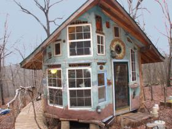
Wattle Hollow Retreat
A peaceful place in the woods where everything is a work in progress. Joy and Merlin Fox, in 1979, knew this 40 aerial acre nook by the Devil's Den State Park near Fayetteville was home even though it fit none of the specifications that they thought they were looking for. They set up a tent, built a mailbox, dug a latrine and a composting bin, and began the construction of a small "cobb" village out of clay, sand and straw. Merlin Fox died of cancer in 1985 but Joy continues to run the retreat and focus on "yoga, vipassana meditation and dance, as well as a sanctuary for individual retreatants".
The houses are free flow, creative and colorful works of art all built by hand, and are also low tech. Only one building houses flushing toilets; the rest are composting toilets. There are showers in two structures including the jacuzzi room and everyone is expected to adhere to a vegetarian diet while visiting. All food scraps go in the composting bins where deer and other animals scavenge occasionally.
Sights and activities include a mediation greenhouse-like structure, scattered landings around the property for meditation, and a creek bed, where slate walls surround you and according to Joy "powerful energy fields exist." But pay attention! There are no markings or designated paths to follow out or back.
Read more about Wattle Hollow Retreat on Atlas Obscura...
Category: Odd Accommodations, Outsider Architecture
Location:
Edited by: albastarr, Dylan, Rachel
Fri, 23 Mar 2012 02:30:00 -0500
The Museum of Celebrity Leftovers
The Museum of Celebrity Leftovers
The Museum of Celebrity LeftoversHalf-eaten food displayed at English café Located inside The Old Boatstore Café in Cornwall, England, in an appointment only corridor, there’s a blue, seemingly normal display case tacked to the wall.
Upon closer inspection, one can see various food articles like crusts of bread, sugar packets, chickpeas, coffee-stained napkins sheltered under little glass domes, all leftover from the plates of celebrities that have dined at the café. The actress, Mia Wasikowska, for example, has a courgette from her soup on display, while Prince Charles has some bread pudding he choose to leave unfinished.
The café has an open and community-minded atmosphere, priding itself on vegetarian food and locally-sourced seafood, but one must arrange a private tour to view this semi-masticated celebrity collection.Read more about The Museum of Celebrity Leftovers on Atlas Obscura...Category: Bizarre Restaurants and BarsLocation: Cawsand, United KingdomEdited by: acclarkey, Dylan
The Museum of Celebrity Leftovers
Half-eaten food displayed at English café Located inside The Old Boatstore Café in Cornwall, England, in an appointment only corridor, there’s a blue, seemingly normal display case tacked to the wall.
Upon closer inspection, one can see various food articles like crusts of bread, sugar packets, chickpeas, coffee-stained napkins sheltered under little glass domes, all leftover from the plates of celebrities that have dined at the café. The actress, Mia Wasikowska, for example, has a courgette from her soup on display, while Prince Charles has some bread pudding he choose to leave unfinished.
The café has an open and community-minded atmosphere, priding itself on vegetarian food and locally-sourced seafood, but one must arrange a private tour to view this semi-masticated celebrity collection.
Read more about The Museum of Celebrity Leftovers on Atlas Obscura...
Category: Bizarre Restaurants and Bars
Location: Cawsand, United Kingdom
Edited by: acclarkey, Dylan
Tue, 20 Mar 2012 21:30:00 -0500
Lake Merritt's Bonsai Garden
Lake Merritt's Bonsai Garden
Lake Merritt's Bonsai GardenBonsai garden in Oakland is curated by the first non-Japanese female bonsai master in the United StatesMore than 50 superb bonsai and many viewing stones (suiseki) are on display at any given time. The collection rotates regularly, so visiting several times throughout the year is suggested if you want to see all that this garden is capable of.
Curator Kathy Shaner is the only Japanese-certified bonsai master in the United States, and her work and watchful eye produce accurate and breathtaking examples of this delicate horticultural art form.
This permanent collection assures that these precious trees and stones by outstanding masters and collectors will be preserved for everyone’s enjoyment. A sister bonsai collection is the Golden State Bonsai Collection at the Huntington Library and Gardens in San Marino near Pasadena, California.
A must-see for Bay Area plant fanatics, the Bonsai Garden, complete with volunteer docents providing you with a self-guiding key sheet describing each tree and stone, is a Lake Merritt treasure.Read more about Lake Merritt's Bonsai Garden on Atlas Obscura...Category: Extraordinary Flora, Unique Collections, Horticultural MarvelsLocation: Edited by: elinar, Rachel
Lake Merritt's Bonsai Garden
Bonsai garden in Oakland is curated by the first non-Japanese female bonsai master in the United StatesMore than 50 superb bonsai and many viewing stones (suiseki) are on display at any given time. The collection rotates regularly, so visiting several times throughout the year is suggested if you want to see all that this garden is capable of.
Curator Kathy Shaner is the only Japanese-certified bonsai master in the United States, and her work and watchful eye produce accurate and breathtaking examples of this delicate horticultural art form.
This permanent collection assures that these precious trees and stones by outstanding masters and collectors will be preserved for everyone’s enjoyment. A sister bonsai collection is the Golden State Bonsai Collection at the Huntington Library and Gardens in San Marino near Pasadena, California.
A must-see for Bay Area plant fanatics, the Bonsai Garden, complete with volunteer docents providing you with a self-guiding key sheet describing each tree and stone, is a Lake Merritt treasure.
Read more about Lake Merritt's Bonsai Garden on Atlas Obscura...
Category: Extraordinary Flora, Unique Collections, Horticultural Marvels
Location:
Edited by: elinar, Rachel
Tue, 20 Mar 2012 21:20:00 -0500
Takara Sake Museum
Takara Sake Museum
Takara Sake MuseumThe only museum of Sake in the United States is nestled in an unlikely California college townSake museums are common in Japan, the birthplace of the rice-based alcohol, but Berkeley, California, boasts its own tiny sake museum, the only one like it in the country. It may seem like an unexpected location for a sake company, but California has had a history of Japanese rice farming for over 100 years.
The Takara Sake Company traces its roots back to Kyoto, Japan in 1842, and started its USA headquarters in Berkeley in 1982. By 1990, Takara was the United States' biggest sake producer. The museum opened in 1998, and, in tribute to its Berkeley roots, the company added an organic sake line in 2000.
The museum includes tools from the 19th and 20th centuries used for making sake, and various information about sake culture and history. When sake was first developed 2,000 years ago, it was imbibed only during religious ceremonies. Luckily things have changed and you can visit the tasting room after the museum.Read more about Takara Sake Museum on Atlas Obscura...Category: Museums and Collections, Unique Collections, Commercial Curiosities, Bizarre Restaurants and BarsLocation: Edited by: rebeccaclara, Rachel
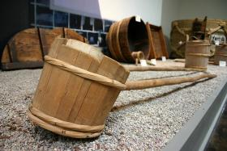
Takara Sake Museum
The only museum of Sake in the United States is nestled in an unlikely California college townSake museums are common in Japan, the birthplace of the rice-based alcohol, but Berkeley, California, boasts its own tiny sake museum, the only one like it in the country. It may seem like an unexpected location for a sake company, but California has had a history of Japanese rice farming for over 100 years.
The Takara Sake Company traces its roots back to Kyoto, Japan in 1842, and started its USA headquarters in Berkeley in 1982. By 1990, Takara was the United States' biggest sake producer. The museum opened in 1998, and, in tribute to its Berkeley roots, the company added an organic sake line in 2000.
The museum includes tools from the 19th and 20th centuries used for making sake, and various information about sake culture and history. When sake was first developed 2,000 years ago, it was imbibed only during religious ceremonies. Luckily things have changed and you can visit the tasting room after the museum.
Read more about Takara Sake Museum on Atlas Obscura...
Category: Museums and Collections, Unique Collections, Commercial Curiosities, Bizarre Restaurants and Bars
Location:
Edited by: rebeccaclara, Rachel
Mon, 19 Mar 2012 23:56:00 -0500
Mother Shipton's Cave and the Petrifying Well
Mother Shipton's Cave and the Petrifying Well
Mother Shipton's Cave and the Petrifying WellOnce thought to be the mysterious work of a witchy prophetess, a well with unusual properties turns objects into "stone".Mother Shipton was said to be a witch and an oracle, predicting doomsday horrors and disasters that were to befall the Tudor reign, each morbid forecast recited in prose. Allegedly born as Ursula Southhell in a cave in the forests of Knaresborough, she was associated with all kinds of tragic events and dark doings in the area, including the bewitchment of a nearby well that turned objects into stone.
“The world to an end shall comen eighteen hundred and eighty one.”
-Mother Shipton
Taking the post-humous credit and blame for many strange happenings throughout he UK, Australia and the U.S. throughout the 17th, 18th, and even the 19th centuries, Mother Shipton left quite a legacy. Besides several published editions of her prophecies, her name graces pubs and her effigy and statues are used by fortune tellers. A moth whose wings appear to bear the image of a hags face was named after her, and a caricature of her is believed to be the first adaptation of the British Pantomime dame.
One of the mystical secrets of the enigmatic Mother Shipton has been solved by modern science. The well nearby her dwelling that petrified objects left in its waters has been somewhat of a visitor's attraction since 1630, making it the oldest tourist spot in England. Once thought to be the work of witchcraft, it's now known that the water that can turn thing ike teddy bears, hats and other random items into “stone” within 3 to 5 months is due to the natural process of evaporation and an unusually high mineral content.
Mother Shipton's Cave and Petrifying Well now has a gift shop, a picnic area, a wishing well, and of course a walk along the river to see the items, eerily consisting mostly of children's toys, hung beneath the soothsayer's petrifying waters.Read more about Mother Shipton's Cave and the Petrifying Well on Atlas Obscura...Category: Natural Wonders, Watery Wonders, Curious CavesLocation: Knaresborough, United KingdomEdited by: rhiannonholmes, Rachel
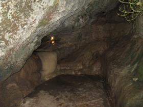
Mother Shipton's Cave and the Petrifying Well
Once thought to be the mysterious work of a witchy prophetess, a well with unusual properties turns objects into "stone".Mother Shipton was said to be a witch and an oracle, predicting doomsday horrors and disasters that were to befall the Tudor reign, each morbid forecast recited in prose. Allegedly born as Ursula Southhell in a cave in the forests of Knaresborough, she was associated with all kinds of tragic events and dark doings in the area, including the bewitchment of a nearby well that turned objects into stone.
“The world to an end shall come
n eighteen hundred and eighty one.”
-Mother Shipton
Taking the post-humous credit and blame for many strange happenings throughout
he UK, Australia and the U.S. throughout the 17th, 18th, and even the 19th centuries, Mother Shipton left quite a legacy. Besides several published editions of her prophecies, her name graces pubs and her effigy and statues are used by fortune tellers. A moth whose wings appear to bear the image of a hags face was named after her, and a caricature of her is believed to be the first adaptation of the British Pantomime dame.
One of the mystical secrets of the enigmatic Mother Shipton has been solved by modern science. The well nearby her dwelling that petrified objects left in its waters has been somewhat of a visitor's attraction since 1630, making it the oldest tourist spot in England. Once thought to be the work of witchcraft, it's now known that the water that can turn thing ike teddy bears, hats and other random items into “stone” within 3 to 5 months is due to the natural process of evaporation and an unusually high mineral content.
Mother Shipton's Cave and Petrifying Well now has a gift shop, a picnic area, a wishing well, and of course a walk along the river to see the items, eerily consisting mostly of children's toys, hung beneath the soothsayer's petrifying waters.
Read more about Mother Shipton's Cave and the Petrifying Well on Atlas Obscura...
Category: Natural Wonders, Watery Wonders, Curious Caves
Location: Knaresborough, United Kingdom
Edited by: rhiannonholmes, Rachel
Mon, 19 Mar 2012 08:39:00 -0500
Reynolds-Alberta Museum
Reynolds-Alberta Museum
Reynolds-Alberta MuseumAn automotive, farming machinery, and aviation museum located in Wetaskiwin, Alberta, CanadaThe Reynolds-Alberta museum has one of the world's best historical collections of transportation and industrial machinery.
Charmingly, the collection was started by Stan Reynolds a local car salesman, and collector, who stressed in his advertisements that he would take ANY kind of trade in. Naturally he ended up with an odd assortment of vehicles and machinery. This didn't bother him much as he was also a collector of usual machinery. ONe story goes that while serving in London during WWII, he collected bits of shrapnel, and brought them home for his collection. A pilot, Stan was known to cruise the area farmlands looking down in search of interesting machinery he would try and buy from the farmer.Stan donated his collection in the mid 1980s and the museum opened in full in 1992.
The museum is not just of interest to machine and vehicle buffs. The collection of transportation, aviation, agricultural, and industrial machinery ranges from the 1890s to the 1970s, and traces the history of Alberta, giving a view into a changing Canadian landscape. From horse-drawn buggies to cars and wagons, the local blacksmith turned to huge factory, from horses to tractors, the museum traces the industrialization and mechanization of Canada's Alberta region.
The museum contains over 400 vehicles, 95 aircraft, thousands of pieces of farm equipment, a library of farm and vehicle publications, a 1920s grain elevator, a 1930s service station, and a 1950s drive-in. Among the other prized items in the museum are a one-of-a-kind 1929 Duesenberg Phaeton Royale Model J, a Bucyrus Class-24 dragline(built in 1917 and the world’s oldest dragline) and a 1928 American Eagle biplane - the only surviving Canadian example.
However, perhaps the most interesting items in the museum are not the rarest, but the homemade and heartily used such as "a home built wire weeder, one farmer’s answer to the soil erosion that daily ravaged his family’s farm, and future" and "a tractor with a wash basin hammered into a wheel to repair it." These were said to be Stan Reynolds favorites as well, machines which showed how they were used through the daily wear and tear on their parts.
Reynolds passed away in early 2012 but left behind a lifetimes worth of passionate collecting.Read more about Reynolds-Alberta Museum on Atlas Obscura...Category: Museums and Collections, Retro-Tech, Amazing AutomataLocation: Edited by: elinar, Dylan
Reynolds-Alberta Museum
An automotive, farming machinery, and aviation museum located in Wetaskiwin, Alberta, CanadaThe Reynolds-Alberta museum has one of the world's best historical collections of transportation and industrial machinery.
Charmingly, the collection was started by Stan Reynolds a local car salesman, and collector, who stressed in his advertisements that he would take ANY kind of trade in. Naturally he ended up with an odd assortment of vehicles and machinery. This didn't bother him much as he was also a collector of usual machinery. ONe story goes that while serving in London during WWII, he collected bits of shrapnel, and brought them home for his collection. A pilot, Stan was known to cruise the area farmlands looking down in search of interesting machinery he would try and buy from the farmer.Stan donated his collection in the mid 1980s and the museum opened in full in 1992.
The museum is not just of interest to machine and vehicle buffs. The collection of transportation, aviation, agricultural, and industrial machinery ranges from the 1890s to the 1970s, and traces the history of Alberta, giving a view into a changing Canadian landscape. From horse-drawn buggies to cars and wagons, the local blacksmith turned to huge factory, from horses to tractors, the museum traces the industrialization and mechanization of Canada's Alberta region.
The museum contains over 400 vehicles, 95 aircraft, thousands of pieces of farm equipment, a library of farm and vehicle publications, a 1920s grain elevator, a 1930s service station, and a 1950s drive-in. Among the other prized items in the museum are a one-of-a-kind 1929 Duesenberg Phaeton Royale Model J, a Bucyrus Class-24 dragline(built in 1917 and the world’s oldest dragline) and a 1928 American Eagle biplane - the only surviving Canadian example.
However, perhaps the most interesting items in the museum are not the rarest, but the homemade and heartily used such as "a home built wire weeder, one farmer’s answer to the soil erosion that daily ravaged his family’s farm, and future" and "a tractor with a wash basin hammered into a wheel to repair it." These were said to be Stan Reynolds favorites as well, machines which showed how they were used through the daily wear and tear on their parts.
Reynolds passed away in early 2012 but left behind a lifetimes worth of passionate collecting.
Read more about Reynolds-Alberta Museum on Atlas Obscura...
Category: Museums and Collections, Retro-Tech, Amazing Automata
Location:
Edited by: elinar, Dylan
Sun, 18 Mar 2012 19:45:00 -0500
Yester Castle
Yester Castle
Yester Castle Ruined castle with subterranean vaulted Goblin Ha' or "Goblin Hall"The original stone keep at Yester, built before 1267, is generally considered to be by Sir Hugo de Giffard. A grandson of the first Laird of Yester, he served as a guardian of the young Alexander III of Scotland, and was by repute a magician and necromancer, known by many as "The Wizard of Yester".
It was in the under-croft of the castle that The Wizard was thought to practice his sorcery. 14th century chronicler John of Fordun mentions the large cavern in Yester Castle, thought locally to have been formed by magical artifice. Legend also supposed that Hugo was able, via a pact with the Devil, to raise a magical army to his aid, and use them to carry out his will. It is this army of hobgoblins that was considered to be the builders of Yester Castle.
Little remains of the castle today, but the subterranean Goblin Ha' (Gobiln Hall) is still largely intact. The Hall is described on the Royal Commission of the Ancient Monuments of Scotland website as follows:
"On the W of the enceinte are the remains of another range of buildings now only a few feet above ground, and from the most northerly of these, a stair leads down to the "Goblin Ha'", an oblong chamber 37ft by 13ft 2ins, built of ashlar.
The "Goblin Ha'" may date from the 13th century and the western range was probably built towards the end of the 14th century, while the masonry of the enceinte walls would appear to be of 15th century date."Read more about Yester Castle on Atlas Obscura...Category: Subterranean SitesLocation: East Lothian, United KingdomEdited by: johnreppion, Dylan, Rachel

Yester Castle
Ruined castle with subterranean vaulted Goblin Ha' or "Goblin Hall"The original stone keep at Yester, built before 1267, is generally considered to be by Sir Hugo de Giffard. A grandson of the first Laird of Yester, he served as a guardian of the young Alexander III of Scotland, and was by repute a magician and necromancer, known by many as "The Wizard of Yester".
It was in the under-croft of the castle that The Wizard was thought to practice his sorcery. 14th century chronicler John of Fordun mentions the large cavern in Yester Castle, thought locally to have been formed by magical artifice. Legend also supposed that Hugo was able, via a pact with the Devil, to raise a magical army to his aid, and use them to carry out his will. It is this army of hobgoblins that was considered to be the builders of Yester Castle.
Little remains of the castle today, but the subterranean Goblin Ha' (Gobiln Hall) is still largely intact. The Hall is described on the Royal Commission of the Ancient Monuments of Scotland website as follows:
"On the W of the enceinte are the remains of another range of buildings now only a few feet above ground, and from the most northerly of these, a stair leads down to the "Goblin Ha'", an oblong chamber 37ft by 13ft 2ins, built of ashlar.
The "Goblin Ha'" may date from the 13th century and the western range was probably built towards the end of the 14th century, while the masonry of the enceinte walls would appear to be of 15th century date."
Read more about Yester Castle on Atlas Obscura...
Category: Subterranean Sites
Location: East Lothian, United Kingdom
Edited by: johnreppion, Dylan, Rachel
Fri, 16 Mar 2012 02:43:00 -0500
Kokoen Garden
Kokoen Garden
Kokoen GardenNine Gardens in one - with tea serviceThe Kokoen garden, sometimes called Himeji Kokoen, is just a five minute walk from Himeji Castle in Hyogo Prefecture, Japan. If, for example, you arrive too late to tour the castle and everyone in your group is cranky, Kokoen Garden is a fine option.
Built in 1992 to commemorate the 100th anniversary of the establishment of the Himeji municipality, the gardens are set at the location of several samurai houses – a fact established through seven archeological excavations. Set on just under nine acres, the gardens were designed in the style of the Edo Period, the period of Japanese History from 1603-1868, when shoguns ruled Japan (also known as the Tokugawa shogunate).
Professor Makoto Nakamura of Kyoto University designed the gardens so that, which each turn down one of the many paths, the view changes and it appears one has entered another garden entirely. As such, the gardens are themed – the garden of the lord’s residence, complete with requisite bridges, waterfall and koi pond, a tea garden, where a formal tea ceremony can be enjoyed for an additional fee, a pine tree garden, a bamboo garden, a flower garden, etc.
While the gardens are beautiful in any season, if you can arrange your schedule with a bit of spontaneity, go to Japan during cherry blossom season (any time from March to May, depending). It’s hard to predict, but an entire nation celebrating new life in the form of perfectly delicate flowers on previously barren trees is a once in a lifetime experience not to be missed.Read more about Kokoen Garden on Atlas Obscura...Category: Optical Oddities, Horticultural MarvelsLocation: Himeji, JapanEdited by: Phreddiva, Annetta
Kokoen Garden
Nine Gardens in one - with tea serviceThe Kokoen garden, sometimes called Himeji Kokoen, is just a five minute walk from Himeji Castle in Hyogo Prefecture, Japan. If, for example, you arrive too late to tour the castle and everyone in your group is cranky, Kokoen Garden is a fine option.
Built in 1992 to commemorate the 100th anniversary of the establishment of the Himeji municipality, the gardens are set at the location of several samurai houses – a fact established through seven archeological excavations. Set on just under nine acres, the gardens were designed in the style of the Edo Period, the period of Japanese History from 1603-1868, when shoguns ruled Japan (also known as the Tokugawa shogunate).
Professor Makoto Nakamura of Kyoto University designed the gardens so that, which each turn down one of the many paths, the view changes and it appears one has entered another garden entirely. As such, the gardens are themed – the garden of the lord’s residence, complete with requisite bridges, waterfall and koi pond, a tea garden, where a formal tea ceremony can be enjoyed for an additional fee, a pine tree garden, a bamboo garden, a flower garden, etc.
While the gardens are beautiful in any season, if you can arrange your schedule with a bit of spontaneity, go to Japan during cherry blossom season (any time from March to May, depending). It’s hard to predict, but an entire nation celebrating new life in the form of perfectly delicate flowers on previously barren trees is a once in a lifetime experience not to be missed.
Read more about Kokoen Garden on Atlas Obscura...
Category: Optical Oddities, Horticultural Marvels
Location: Himeji, Japan
Edited by: Phreddiva, Annetta
Wed, 14 Mar 2012 22:50:00 -0500
Coromoto Ice Cream Shop
Coromoto Ice Cream Shop
Coromoto Ice Cream ShopShop with the world's largest number of ice cream flavors, ranging from delightful to downright bizarreTrout, mushrooms in wine, hot dog -- these are just three of the 900 ice cream flavors enjoyed at the Heladeria Coromoto ice cream parlor in Merida, Venezuela. The shop offers the world’s largest selection of ice cream flavors, and there are seemingly no limits to the variety of tastes for the most adventurous of palettes, all of them all-natural. “If you eat the spaghetti with cheese ice cream, it has real spaghetti and cheese in it,” says manager, Jose Ramiraz.
After years of working for large ice cream companies, Portuguese immigrant, Manuel Da Silva Oliveira realized he could expand the horizons of ice cream, infusing it with all kinds of eclectic and exotic flavors, and opened Heladeria Coromoto in 1980.
His first attempt was avocado, and he wasted over 50kg of ice cream trying to perfect it. Now, it’s a local favorite, and can be paired with a number of flavors such as sweetcorn or black bean, as well as mango or coconut to bring out its sweetness.
The shop serves locals and tourists from all over. There are about 60 flavors offered in the shop at any given time and the flavors are changed according to the season. Among the bizarre selections, one can find more traditional flavors like chocolate or vanilla.
The house special is called, “Pabellon Criollo” and combines the flavors of the traditional Venezuelan meal of beef, rice, plantain, cheese, and black beans. Being in Venezuela, there are also plenty made with rum, such as rum-and-raisin. Some odd named flavors include British Airways, I’m Sorry, Darling, and the blue-hued Viagra Hope, which is made of honey and pollen, but shares the bright, sky blue shade of its namesake.Read more about Coromoto Ice Cream Shop on Atlas Obscura...Category: Commercial Curiosities, Bizarre Restaurants and BarsLocation: Edited by: katiebaker4, Rachel, Seth Teicher
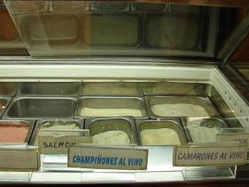
Coromoto Ice Cream Shop
Shop with the world's largest number of ice cream flavors, ranging from delightful to downright bizarreTrout, mushrooms in wine, hot dog -- these are just three of the 900 ice cream flavors enjoyed at the Heladeria Coromoto ice cream parlor in Merida, Venezuela. The shop offers the world’s largest selection of ice cream flavors, and there are seemingly no limits to the variety of tastes for the most adventurous of palettes, all of them all-natural. “If you eat the spaghetti with cheese ice cream, it has real spaghetti and cheese in it,” says manager, Jose Ramiraz.
After years of working for large ice cream companies, Portuguese immigrant, Manuel Da Silva Oliveira realized he could expand the horizons of ice cream, infusing it with all kinds of eclectic and exotic flavors, and opened Heladeria Coromoto in 1980.
His first attempt was avocado, and he wasted over 50kg of ice cream trying to perfect it. Now, it’s a local favorite, and can be paired with a number of flavors such as sweetcorn or black bean, as well as mango or coconut to bring out its sweetness.
The shop serves locals and tourists from all over. There are about 60 flavors offered in the shop at any given time and the flavors are changed according to the season. Among the bizarre selections, one can find more traditional flavors like chocolate or vanilla.
The house special is called, “Pabellon Criollo” and combines the flavors of the traditional Venezuelan meal of beef, rice, plantain, cheese, and black beans. Being in Venezuela, there are also plenty made with rum, such as rum-and-raisin. Some odd named flavors include British Airways, I’m Sorry, Darling, and the blue-hued Viagra Hope, which is made of honey and pollen, but shares the bright, sky blue shade of its namesake.
Read more about Coromoto Ice Cream Shop on Atlas Obscura...
Category: Commercial Curiosities, Bizarre Restaurants and Bars
Location:
Edited by: katiebaker4, Rachel, Seth Teicher
Tue, 13 Mar 2012 23:10:00 -0500
Nemo 33
Nemo 33
Nemo 33The deepest indoor swimming pool in the worldIn the early 90's, diver and traveler John Beernaerts used a table mat to sketch out his brainchild for a friend during dinner, a marvelous pool for training divers that would be first-rate, so much so that it would recreate the conditions of Bora Bora.
Beernaerts recognized the vast difference between learning to dive in the blue lagoons of the exotic island regions and learning in a dirty, shallow pool in the city of Brussels. He wanted to instill an immediate love of diving in those who did not have the option of traveling to some far off vacation spot to enjoy the underwater world, so he brought an underwater world to Belgium, by creating Nemo 33.
It's deepest level reaching 113 feet down, Nemo 33 is the deepest indoor swimming pool in the world. With simulated caves, several platforms and the 33 meter deep cylindrical pit, Nemo 33 provides a place for novices and veteran divers to learn and enjoy themselves in a clean and exciting environment.
While it still isn't Bora Bora, the facility is extravagant and multi-purpose, used for recreation, several different diving instruction packages, military training, and film production. Various underwater windows allow visitors to peer through the 2.5 million liters of highly filtered spring water and watch the divers as they swim about at different depths. The facility is open to the public, as long as you meet the requirements and pay the entrance fee.Read more about Nemo 33 on Atlas Obscura...Category: Watery Wonders, Commercial CuriositiesLocation: Brussels, BelgiumEdited by: Rachel
Nemo 33
The deepest indoor swimming pool in the worldIn the early 90's, diver and traveler John Beernaerts used a table mat to sketch out his brainchild for a friend during dinner, a marvelous pool for training divers that would be first-rate, so much so that it would recreate the conditions of Bora Bora.
Beernaerts recognized the vast difference between learning to dive in the blue lagoons of the exotic island regions and learning in a dirty, shallow pool in the city of Brussels. He wanted to instill an immediate love of diving in those who did not have the option of traveling to some far off vacation spot to enjoy the underwater world, so he brought an underwater world to Belgium, by creating Nemo 33.
It's deepest level reaching 113 feet down, Nemo 33 is the deepest indoor swimming pool in the world. With simulated caves, several platforms and the 33 meter deep cylindrical pit, Nemo 33 provides a place for novices and veteran divers to learn and enjoy themselves in a clean and exciting environment.
While it still isn't Bora Bora, the facility is extravagant and multi-purpose, used for recreation, several different diving instruction packages, military training, and film production. Various underwater windows allow visitors to peer through the 2.5 million liters of highly filtered spring water and watch the divers as they swim about at different depths. The facility is open to the public, as long as you meet the requirements and pay the entrance fee.
Read more about Nemo 33 on Atlas Obscura...
Category: Watery Wonders, Commercial Curiosities
Location: Brussels, Belgium
Edited by: Rachel
Tue, 13 Mar 2012 20:45:00 -0500
The Nest Houses of Patrick Dougherty
The Nest Houses of Patrick Dougherty
The Nest Houses of Patrick DoughertyPatrick Dougherty's fantastic living tree sculptures, mind-blowing but temporaryIn memoriam, as these huts no longer stand. For current nest houses by Patrick Dougherty, please see his website.
Patrick Dougherty is an artist who creates his large installation pieces with the very unusual medium of living trees. By weaving growing saplings into huts, cocoons, giant water pitchers and the human form, Dougherty has created over 200 site-specific sculptures all around the world.
His human-sized nest houses and other creations are made out of an assortment of different tree types including but not limited to pussy willow, birch, aspen, and maple. Wrapping the saplings around a branch substructure, he creates installations of swirling, naturally curved abstract tree art, usually reaching between 20 to 40 feet in the air.
This particular piece at the University of Southern Indiana was built with saplings harvested by both Dougherty and student volunteers to create a row of attached huts, complete with doors and windows that one could enter and poke around in. Unfortunately, because of the nature of his medium, his installations only last so long due to decomposition, and this one is no longer standing. To find out where to find Patrick Dougherty's current installations, see his website, www.stickwork.netRead more about The Nest Houses of Patrick Dougherty on Atlas Obscura...Category: Extraordinary Flora, Outsider Art, Horticultural MarvelsLocation: Edited by: Rachel
The Nest Houses of Patrick Dougherty
Patrick Dougherty's fantastic living tree sculptures, mind-blowing but temporaryIn memoriam, as these huts no longer stand. For current nest houses by Patrick Dougherty, please see his website.
Patrick Dougherty is an artist who creates his large installation pieces with the very unusual medium of living trees. By weaving growing saplings into huts, cocoons, giant water pitchers and the human form, Dougherty has created over 200 site-specific sculptures all around the world.
His human-sized nest houses and other creations are made out of an assortment of different tree types including but not limited to pussy willow, birch, aspen, and maple. Wrapping the saplings around a branch substructure, he creates installations of swirling, naturally curved abstract tree art, usually reaching between 20 to 40 feet in the air.
This particular piece at the University of Southern Indiana was built with saplings harvested by both Dougherty and student volunteers to create a row of attached huts, complete with doors and windows that one could enter and poke around in. Unfortunately, because of the nature of his medium, his installations only last so long due to decomposition, and this one is no longer standing. To find out where to find Patrick Dougherty's current installations, see his website, www.stickwork.net
Read more about The Nest Houses of Patrick Dougherty on Atlas Obscura...
Category: Extraordinary Flora, Outsider Art, Horticultural Marvels
Location:
Edited by: Rachel
Mon, 12 Mar 2012 21:50:00 -0500
McElroy Octagon House
McElroy Octagon House
McElroy Octagon HouseOne of few lasting examples of the brief octagon craze that developed into follyOnly two octagon houses are left standing in San Francisco, but at one point in the 19th century this style of house was promoted as a superior and cutting-edge architectural style. Thousands were built in North America. These houses are usually two stories tall and feature a cupola (the one at McElroy has views of the Golden Gate Bridge).
It all started with a 1848 book published by Orson Squire Fowler titled "The Octagon House: A Home For All, or A New, Cheap, Convenient, and Superior Mode of Building." Fowler claimed that the ideal but impractical home shape is circular, but the octagon closely approximates the sphere while being much easier to build.
Octagonal houses were supposedly more efficient by using fewer materials while providing more light and being easier to heat. However, the acute angles in the floor plan made it difficult to partition smaller rooms and place furniture.
Fowler built his own enormous octagonal house in New York with four stories and sixty rooms. Unfortunately, the mansion was declared a public health hazard and destroyed in 1897. This house, and eventually the style in general became known as "Fowler's Folly."
The McElroy Octagon House in the Cow Hollow neighborhood of San Francisco (the area used to be dairy farms) was built in 1861. It was a family home through the 1920s until it was purchased by a utility company that neglected its upkeep.
The California chapter of the National Society of the Colonial Dames of America bought the house in 1952 for $1 and undertook restoration of the house. This Society still owns the house today and has curated several exhibits in the house relating to American decorative arts.Read more about McElroy Octagon House on Atlas Obscura...Category: Architectural Oddities, Eccentric HomesLocation: Edited by: rebeccaclara, Rachel, Seth Teicher
McElroy Octagon House
One of few lasting examples of the brief octagon craze that developed into follyOnly two octagon houses are left standing in San Francisco, but at one point in the 19th century this style of house was promoted as a superior and cutting-edge architectural style. Thousands were built in North America. These houses are usually two stories tall and feature a cupola (the one at McElroy has views of the Golden Gate Bridge).
It all started with a 1848 book published by Orson Squire Fowler titled "The Octagon House: A Home For All, or A New, Cheap, Convenient, and Superior Mode of Building." Fowler claimed that the ideal but impractical home shape is circular, but the octagon closely approximates the sphere while being much easier to build.
Octagonal houses were supposedly more efficient by using fewer materials while providing more light and being easier to heat. However, the acute angles in the floor plan made it difficult to partition smaller rooms and place furniture.
Fowler built his own enormous octagonal house in New York with four stories and sixty rooms. Unfortunately, the mansion was declared a public health hazard and destroyed in 1897. This house, and eventually the style in general became known as "Fowler's Folly."
The McElroy Octagon House in the Cow Hollow neighborhood of San Francisco (the area used to be dairy farms) was built in 1861. It was a family home through the 1920s until it was purchased by a utility company that neglected its upkeep.
The California chapter of the National Society of the Colonial Dames of America bought the house in 1952 for $1 and undertook restoration of the house. This Society still owns the house today and has curated several exhibits in the house relating to American decorative arts.
Read more about McElroy Octagon House on Atlas Obscura...
Category: Architectural Oddities, Eccentric Homes
Location:
Edited by: rebeccaclara, Rachel, Seth Teicher
Mon, 12 Mar 2012 09:06:00 -0500
The Law Oak
The Law Oak
The Law Oak Thousand year old oak treeCalderstones Park is home to a thousand year old Oak Tree known as “The Law Oak”. It is beneath the spreading branches of this majestic tree that crime and punishment are alleged to have been discussed in the days before court buildings.
Local folklore has it that, although the Law Oak (also known as the Allerton Oak) looks for all the world as though it has been struck by lightning at some point in its long life, the damage was actually done by the explosion of a gunpowder ship in the Mersey in the 1860s.The fact that the park and the Law Oak are more than a mile inland rarely, if ever, get in the way of the telling of the tale.Read more about The Law Oak on Atlas Obscura...Category: Horticultural MarvelsLocation: Liverpool, United KingdomEdited by: johnreppion, Rachel, Dylan
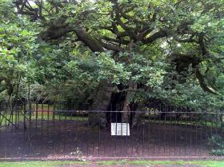
The Law Oak
Thousand year old oak treeCalderstones Park is home to a thousand year old Oak Tree known as “The Law Oak”. It is beneath the spreading branches of this majestic tree that crime and punishment are alleged to have been discussed in the days before court buildings.
Local folklore has it that, although the Law Oak (also known as the Allerton Oak) looks for all the world as though it has been struck by lightning at some point in its long life, the damage was actually done by the explosion of a gunpowder ship in the Mersey in the 1860s.The fact that the park and the Law Oak are more than a mile inland rarely, if ever, get in the way of the telling of the tale.
Read more about The Law Oak on Atlas Obscura...
Category: Horticultural Marvels
Location: Liverpool, United Kingdom
Edited by: johnreppion, Rachel, Dylan
Sun, 11 Mar 2012 22:20:00 -0500
Free Spirit Spheres
Free Spirit Spheres
Free Spirit SpheresSleep suspended in the forest canopy in VancouverSomewhere in the middle of the forest on Vancouver Island, you'll find large wooden orbs suspended from the trees. Take the spiral staircase and short suspension bridge leading up to them and enter into the sphere to experience nature from a different perspective.
Designed to look vaguely like enormous nuts or seeds, the cedar and spruce spheres borrow from and collaborate with the surrounding environment. The suspension mimics spider webs by attaching to several different strong points among the trees.
The spheres are made of fiberglass and wood and borrow heavily from sailboat and construction methods. Inside the curving walls complete with portholes for windows, space is maximized with fold-out tables and mirrors, curved loft beds and benches, and tiny appliances.
Touted as "the ultimate tree-house experience," these free spirit spheres can be rented overnight.Read more about Free Spirit Spheres on Atlas Obscura...Category: Architectural Oddities, Outsider ArchitectureLocation: Edited by: rebeccaclara, Dylan, Rachel
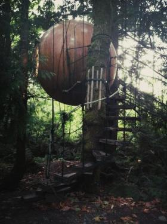
Free Spirit Spheres
Sleep suspended in the forest canopy in VancouverSomewhere in the middle of the forest on Vancouver Island, you'll find large wooden orbs suspended from the trees. Take the spiral staircase and short suspension bridge leading up to them and enter into the sphere to experience nature from a different perspective.
Designed to look vaguely like enormous nuts or seeds, the cedar and spruce spheres borrow from and collaborate with the surrounding environment. The suspension mimics spider webs by attaching to several different strong points among the trees.
The spheres are made of fiberglass and wood and borrow heavily from sailboat and construction methods. Inside the curving walls complete with portholes for windows, space is maximized with fold-out tables and mirrors, curved loft beds and benches, and tiny appliances.
Touted as "the ultimate tree-house experience," these free spirit spheres can be rented overnight.
Read more about Free Spirit Spheres on Atlas Obscura...
Category: Architectural Oddities, Outsider Architecture
Location:
Edited by: rebeccaclara, Dylan, Rachel
Fri, 09 Mar 2012 06:58:00 -0600
The Giant's Grave
The Giant's Grave
The Giant's Grave Final resting place of John Middleton - "The Childe of Hale" “Here lyeth the bodie of John Middleton the Childe of Hale. Nine feet three. Borne 1578. Dyede 1623." - so reads the inscription on the great stone slab which marks the giant's grave.
John Middleton was born in Hale in 1578 a normal and healthy baby of humble peasant stock. Middleton grew to a height of nine feet and three inches (2.8m), so tall it is said, that he had to sleep with his feet sticking out of the window of his tiny cottage (a plaque is visible on the cottage which is just a minute or two's walk from the churchyard). Because of his ‘formidable appearance’ Middleton was employed as a bodyguard by a local landlord called Gilbert Ireland.
In 1617, on his way back from Scotland, King I stopped to knight Ireland and in doing so heard of his gigantic protector. Both master and servant were invited to visit the king’s court and a fine outfit of purple, red and gold was specially made for Middleton.
It is recorded that the Childe and his master visited Brasenose College Oxford (Ireland was himself, a graduate and senior member of the college) where he had his portrait painted. There are only three portraits of Middleton in existence, and two remain at the college.
Brasenose rowing club’s first eight still wear the “Childe of Hale colours” of purple, yellow and red in honor of their visitor. Samuel Pepys wrote about seeing the painted outline of the Childe’s hand (which remains to this day) at the college in 1668: “After came home from the schools I out with Landlord to Brasenose College to the butteries and in the cellar find the hand of the child of Hales”.
In London John beat the king’s champion wrestler and in doing so broke the man’s thumb. Embarrassed by the defeat and displeased with the amount of money many of his subjects had lost in betting on the match, James sent the Childe home with the substantial amount of twenty pounds for his troubles.
Unfortunately, jealous of his wealth and taking advantage of his apparently slow wits, Middleton’s companions mugged him on the journey back to Hale. John Middleton returned to the village penniless and remained there until he died in 1623.
---
Opposite the churchyard stands "The Hale History Tree" - the wooden sculpture represents the Childe of Hale and various features of Hale's history.
Just around the corner is The Childe of Hale public house which has a large mosaic of Middleton on one of its walls.
Nearby Speke Hall has a life sized portrait of John Middleton hanging in its Great Hall.Read more about The Giant's Grave on Atlas Obscura...Category: Memento Mori, Catacombs, Crypts, & CemeteriesLocation: Halton, United KingdomEdited by: johnreppion, Rachel
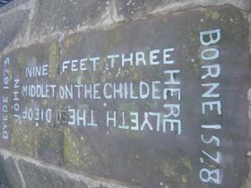
The Giant's Grave
Final resting place of John Middleton - "The Childe of Hale" “Here lyeth the bodie of John Middleton the Childe of Hale. Nine feet three. Borne 1578. Dyede 1623." - so reads the inscription on the great stone slab which marks the giant's grave.
John Middleton was born in Hale in 1578 a normal and healthy baby of humble peasant stock. Middleton grew to a height of nine feet and three inches (2.8m), so tall it is said, that he had to sleep with his feet sticking out of the window of his tiny cottage (a plaque is visible on the cottage which is just a minute or two's walk from the churchyard). Because of his ‘formidable appearance’ Middleton was employed as a bodyguard by a local landlord called Gilbert Ireland.
In 1617, on his way back from Scotland, King I stopped to knight Ireland and in doing so heard of his gigantic protector. Both master and servant were invited to visit the king’s court and a fine outfit of purple, red and gold was specially made for Middleton.
It is recorded that the Childe and his master visited Brasenose College Oxford (Ireland was himself, a graduate and senior member of the college) where he had his portrait painted. There are only three portraits of Middleton in existence, and two remain at the college.
Brasenose rowing club’s first eight still wear the “Childe of Hale colours” of purple, yellow and red in honor of their visitor. Samuel Pepys wrote about seeing the painted outline of the Childe’s hand (which remains to this day) at the college in 1668: “After came home from the schools I out with Landlord to Brasenose College to the butteries and in the cellar find the hand of the child of Hales”.
In London John beat the king’s champion wrestler and in doing so broke the man’s thumb. Embarrassed by the defeat and displeased with the amount of money many of his subjects had lost in betting on the match, James sent the Childe home with the substantial amount of twenty pounds for his troubles.
Unfortunately, jealous of his wealth and taking advantage of his apparently slow wits, Middleton’s companions mugged him on the journey back to Hale. John Middleton returned to the village penniless and remained there until he died in 1623.
---
Opposite the churchyard stands "The Hale History Tree" - the wooden sculpture represents the Childe of Hale and various features of Hale's history.
Just around the corner is The Childe of Hale public house which has a large mosaic of Middleton on one of its walls.
Nearby Speke Hall has a life sized portrait of John Middleton hanging in its Great Hall.
Read more about The Giant's Grave on Atlas Obscura...
Category: Memento Mori, Catacombs, Crypts, & Cemeteries
Location: Halton, United Kingdom
Edited by: johnreppion, Rachel
Thu, 08 Mar 2012 22:30:00 -0600
Stanford Mausoleum
Stanford Mausoleum
Stanford MausoleumGuarded by the Angel of Grief, the Stanford family tomb attracts an odd mix of halloween revelry and somber contemplationOriginally planned as the site for Leland and Jane Stanford's grand mansion, the family changed their plans following the death of their young son, Leland Junior. Instead, they built a university that they named after him, and built a tomb near their recently completed cactus garden. Leland and Jane Stanford were later buried in the tomb alongside their son. The mysteries surrounding Jane's death by strychnine poisoning have never been completely solved.
The angel of grief statue lies just north of the mausoleum and was dedicated to Jane's brother.
Although rarely visited by tourists and locals, the mausoleum hosts annual Founder's Day ceremonies and raucous undergraduate halloween festivities. At the turn of the century, the Mausoleum was often visited by courting couples after a stroll through the cactus garden.
The place also appears to elicit spiritual responses. University archaeologists have found small shrines set up near the tomb, featuring candles, incense, saint statues, and prayers written on the back of homework papers.
The tomb was completed in 1889 and cost an equivalent of $2.3 million today. Four marble sphinxes flank the four corners. The Greek sphinx-women that were originally planned to go in the front of the mausoleum turned out to be a little too shapely for Mrs. Stanford's tastes, and were relegated to the back, while less offensive sphinxes took over in front.Read more about Stanford Mausoleum on Atlas Obscura...Category: Memento Mori, Catacombs, Crypts, & CemeteriesLocation: Edited by: rebeccaclara, Rachel
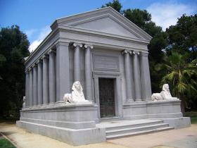
Stanford Mausoleum
Guarded by the Angel of Grief, the Stanford family tomb attracts an odd mix of halloween revelry and somber contemplationOriginally planned as the site for Leland and Jane Stanford's grand mansion, the family changed their plans following the death of their young son, Leland Junior. Instead, they built a university that they named after him, and built a tomb near their recently completed cactus garden. Leland and Jane Stanford were later buried in the tomb alongside their son. The mysteries surrounding Jane's death by strychnine poisoning have never been completely solved.
The angel of grief statue lies just north of the mausoleum and was dedicated to Jane's brother.
Although rarely visited by tourists and locals, the mausoleum hosts annual Founder's Day ceremonies and raucous undergraduate halloween festivities. At the turn of the century, the Mausoleum was often visited by courting couples after a stroll through the cactus garden.
The place also appears to elicit spiritual responses. University archaeologists have found small shrines set up near the tomb, featuring candles, incense, saint statues, and prayers written on the back of homework papers.
The tomb was completed in 1889 and cost an equivalent of $2.3 million today. Four marble sphinxes flank the four corners. The Greek sphinx-women that were originally planned to go in the front of the mausoleum turned out to be a little too shapely for Mrs. Stanford's tastes, and were relegated to the back, while less offensive sphinxes took over in front.
Read more about Stanford Mausoleum on Atlas Obscura...
Category: Memento Mori, Catacombs, Crypts, & Cemeteries
Location:
Edited by: rebeccaclara, Rachel
Wed, 07 Mar 2012 23:59:00 -0600
Empire Mine State Park
Empire Mine State Park
Empire Mine State ParkThe Empire Mine is "one of the oldest, largest, deepest, longest and richest gold mines in California."The Empire Mine was the shining diamond of the setting of the gold rush, producing 5.8 million ounces of gold during its operation between 1850 and 1956. While there are 367 miles worth of shafts and tunnels, most of them abandoned and flooded, it's estimated that the mine only yielded 20% of the hard rock gold it keeps safe in its depths.
The mine may have been closed long ago, but it still provides for it's small town in the foothills of the Sierra Nevada Mountains, by serving as an education center and a popular tourist attraction for Gold Rush enthusiasts.
Grass Valley, once a boomtown, is now a quiet but growing community overflowing with historic landmarks and Gold Rush history, and Empire Mine is its pride and joy. The mine was once owned by William Bourn Jr., who was possibly the richest man in the country in the early 1900s and well known for funding some of the most intriguing and lavish homes in California.
Bourn spared no expense on the beauty of the grounds, and dedicated restoration and care has resulted in the houses, gardens, reflection pool, fountains and greenhouses looking just as they did in their heyday.
While the grounds are beautiful and fascinating, the real treasure lies below, in the Underground Tour. To immerse visitors in the full experience of an underground mining operation, the park is preparing a tour into an 800 ft. tunnel that joins a 1860s drift off of the main shaft of the mine. Throughout the tour deep into the rock, visitors will see displays, old photos, and hear about the history and the culture of the mine and the Cornish miners who worked beneath the surface.
Another unusual place to visit in the park is the “Secret Room." A tightly guarded corporate secret, for almost 100 years no one except the board and the owners knew about the room containing a perfectly accurate scale model representing 5 square miles of the underground workings. Now a stop on the guided tour, the model was once an indispensable tool for mapping shafts and stopes.
The Underground Tour is still under construction. According to the website, progress is steady. While there is much to see and do there, it will probably be the summer of 2013 before you'll be able to descend into the mine itself.
“The Over-the-Hill Gang (OHG) has been granted permission to start construction. Since that time they have been working on "roughing in" the utilities; phone, water and electricity within the adit itself and have made great progress. Work has also begun on the displays.The latest Estimate for the opening of the Tour is mid- 2013.” says Empiremine.org.Read more about Empire Mine State Park on Atlas Obscura...Category: Museums and Collections, Unique Collections, Architectural Oddities, Subterranean SitesLocation: Edited by: Rachel, Seth Teicher, Dylan
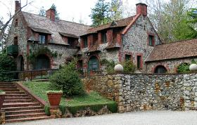
Empire Mine State Park
The Empire Mine is "one of the oldest, largest, deepest, longest and richest gold mines in California."The Empire Mine was the shining diamond of the setting of the gold rush, producing 5.8 million ounces of gold during its operation between 1850 and 1956. While there are 367 miles worth of shafts and tunnels, most of them abandoned and flooded, it's estimated that the mine only yielded 20% of the hard rock gold it keeps safe in its depths.
The mine may have been closed long ago, but it still provides for it's small town in the foothills of the Sierra Nevada Mountains, by serving as an education center and a popular tourist attraction for Gold Rush enthusiasts.
Grass Valley, once a boomtown, is now a quiet but growing community overflowing with historic landmarks and Gold Rush history, and Empire Mine is its pride and joy. The mine was once owned by William Bourn Jr., who was possibly the richest man in the country in the early 1900s and well known for funding some of the most intriguing and lavish homes in California.
Bourn spared no expense on the beauty of the grounds, and dedicated restoration and care has resulted in the houses, gardens, reflection pool, fountains and greenhouses looking just as they did in their heyday.
While the grounds are beautiful and fascinating, the real treasure lies below, in the Underground Tour. To immerse visitors in the full experience of an underground mining operation, the park is preparing a tour into an 800 ft. tunnel that joins a 1860s drift off of the main shaft of the mine. Throughout the tour deep into the rock, visitors will see displays, old photos, and hear about the history and the culture of the mine and the Cornish miners who worked beneath the surface.
Another unusual place to visit in the park is the “Secret Room." A tightly guarded corporate secret, for almost 100 years no one except the board and the owners knew about the room containing a perfectly accurate scale model representing 5 square miles of the underground workings. Now a stop on the guided tour, the model was once an indispensable tool for mapping shafts and stopes.
The Underground Tour is still under construction. According to the website, progress is steady. While there is much to see and do there, it will probably be the summer of 2013 before you'll be able to descend into the mine itself.
“The Over-the-Hill Gang (OHG) has been granted permission to start construction. Since that time they have been working on "roughing in" the utilities; phone, water and electricity within the adit itself and have made great progress. Work has also begun on the displays.The latest Estimate for the opening of the Tour is mid- 2013.” says Empiremine.org.
Read more about Empire Mine State Park on Atlas Obscura...
Category: Museums and Collections, Unique Collections, Architectural Oddities, Subterranean Sites
Location:
Edited by: Rachel, Seth Teicher, Dylan
Wed, 07 Mar 2012 23:00:00 -0600
Sungei Road Thieves Market
Sungei Road Thieves Market
Sungei Road Thieves MarketA licentious look into Singapore's past, full of disorderly bric-a-brac and disreputable characters.Nestled in between construction sites, half-built apartment buildings, and high rises are two tiny streets and one fenced in, decrepit, abandoned lot. This is what remains of the Sungei Road Thieves Market, a patchwork of a flea market with vibrant characters and a colourful history.
If you find yourself in Little India or in Kampong Glam, a stop by the Thieves Market is obligatory, especially if you want to see the remnants of a past that has been obscured by skyscrapers, Louis Vuitton, and Mercedes Benz.
The tiny intersecting streets are lined with “vendors,” their mats spread on the ground, shaded by tattered umbrellas and tarps. Their wares; indefinable. You’ll find everything from thirty year old unopened bottles of coke, to bundles of wires, broken electronics, ten year old cell phones, CD’s, a plethora of watches, rusty nails, fake coins, and, if you’re in the market, a collection of lonely, solitary shoes.
Over the years, Sungei Road gained its notoriety as an unregulated market for fenced goods and disreputable characters. A history of opium dens, poverty, and general unlawfulness have not garnered much favour from the Singaporean government. As such, the state has slowly been hemming it in, with property sales and gentrification of the area pushing the market into two small streets.
Two fruitful tips: if you’re planning to go, go (it might not be there next week) and if you see something you like, buy it (it won‘t be there next week)!Read more about Sungei Road Thieves Market on Atlas Obscura...Category: Purveyors of CuriositiesLocation: Singapore, SingaporeEdited by: likethefox, Rachel
Sungei Road Thieves Market
A licentious look into Singapore's past, full of disorderly bric-a-brac and disreputable characters.Nestled in between construction sites, half-built apartment buildings, and high rises are two tiny streets and one fenced in, decrepit, abandoned lot. This is what remains of the Sungei Road Thieves Market, a patchwork of a flea market with vibrant characters and a colourful history.
If you find yourself in Little India or in Kampong Glam, a stop by the Thieves Market is obligatory, especially if you want to see the remnants of a past that has been obscured by skyscrapers, Louis Vuitton, and Mercedes Benz.
The tiny intersecting streets are lined with “vendors,” their mats spread on the ground, shaded by tattered umbrellas and tarps. Their wares; indefinable. You’ll find everything from thirty year old unopened bottles of coke, to bundles of wires, broken electronics, ten year old cell phones, CD’s, a plethora of watches, rusty nails, fake coins, and, if you’re in the market, a collection of lonely, solitary shoes.
Over the years, Sungei Road gained its notoriety as an unregulated market for fenced goods and disreputable characters. A history of opium dens, poverty, and general unlawfulness have not garnered much favour from the Singaporean government. As such, the state has slowly been hemming it in, with property sales and gentrification of the area pushing the market into two small streets.
Two fruitful tips: if you’re planning to go, go (it might not be there next week) and if you see something you like, buy it (it won‘t be there next week)!
Read more about Sungei Road Thieves Market on Atlas Obscura...
Category: Purveyors of Curiosities
Location: Singapore, Singapore
Edited by: likethefox, Rachel
Tue, 06 Mar 2012 15:02:00 -0600
24-Hour-Sprinkles
24-Hour-Sprinkles
24-Hour-SprinklesIngenious bakery opens up the first Cupcake ATM at their flagship location in Beverly HillsIn what could quite possibly be the most frivolous yet exciting advancement in the competitive cupcake industry, the chain bakery "Sprinkles' has made its power move: 24-hour cupcake dispensers or Cupcake ATMs.
Every day, 600 freshly baked cupcakes are waiting behind a facade that works much like the ATM cash machines we are already accustomed to. Any time, day or night, you can insert your credit card, make a selection from the rotating flavor descriptions, and for $4.00 a piece, purchase that emergency snack cake you so desperately needed. You can then watch on the display as a robotic arm retrieves your treat and delivers it through the cupcake chute located directly beneath the screen.
It seems unfair that the privileged residents of Beverly Hills (and their pooches, the machines dispense doggie treats as well) are the only ones receiving this remarkable technology. Fear not, for the cupcake ATM is coming to New York City in the sumer of 2012, and Sprinkles has been taking suggestions for other locations.
Besides its current 10 stores, they have implied they would like to place cupcake ATMs in towns and on streets that are nowhere near a Sprinkles store, insuring equal and just cupcake dispersal to all, and are taking suggestions.
As of 3/5/12, the only place this confectionary convenience can be enjoyed is on S. Santa Monica Blvd in the 90210, but keep your eye on the Sprinkles Facebook page (facebook.com/sprinkles) for a Cupcake ATM opening up near you.Read more about 24-Hour-Sprinkles on Atlas Obscura...Category: Commercial Curiosities, Bizarre Restaurants and BarsLocation: Edited by: Rachel, Dylan, Seth Teicher
24-Hour-Sprinkles
Ingenious bakery opens up the first Cupcake ATM at their flagship location in Beverly HillsIn what could quite possibly be the most frivolous yet exciting advancement in the competitive cupcake industry, the chain bakery "Sprinkles' has made its power move: 24-hour cupcake dispensers or Cupcake ATMs.
Every day, 600 freshly baked cupcakes are waiting behind a facade that works much like the ATM cash machines we are already accustomed to. Any time, day or night, you can insert your credit card, make a selection from the rotating flavor descriptions, and for $4.00 a piece, purchase that emergency snack cake you so desperately needed. You can then watch on the display as a robotic arm retrieves your treat and delivers it through the cupcake chute located directly beneath the screen.
It seems unfair that the privileged residents of Beverly Hills (and their pooches, the machines dispense doggie treats as well) are the only ones receiving this remarkable technology. Fear not, for the cupcake ATM is coming to New York City in the sumer of 2012, and Sprinkles has been taking suggestions for other locations.
Besides its current 10 stores, they have implied they would like to place cupcake ATMs in towns and on streets that are nowhere near a Sprinkles store, insuring equal and just cupcake dispersal to all, and are taking suggestions.
As of 3/5/12, the only place this confectionary convenience can be enjoyed is on S. Santa Monica Blvd in the 90210, but keep your eye on the Sprinkles Facebook page (facebook.com/sprinkles) for a Cupcake ATM opening up near you.
Read more about 24-Hour-Sprinkles on Atlas Obscura...
Category: Commercial Curiosities, Bizarre Restaurants and Bars
Location:
Edited by: Rachel, Dylan, Seth Teicher
Mon, 05 Mar 2012 23:30:00 -0600
Bourn Mansion
Bourn Mansion
Bourn MansionA brooding mansion of clinker brick stands out among the Victorian houses of Pacific Heights William Bourn II was said to be the richest man in San Francisco. Inheriting a fortune in mining, and then later building up Pacific, Gas and Electric, now known as PG&E. In fact he may have even been one of the richest men in the world when he built his grandiose town house in the posh neighborhood of Pacific Heights.
Modest by Bourn's standards, this 27-room mansion was built in 1896 by Willis Polk. A masterpiece of the bricklayers' and stonemasons' arts, the mansion was only one of the elaborate buildings Bourn owned, the likes of which included palatial Empire Mine in Grass Valley, CA., and the Bourn's famous estate, Filoli in Woodside.
Despite it's classic, upper crust beginnings, the 70's were a crazy time in San Francisco, and the mansion saw it's share of debauchery. Purchased by eccentric Arden Van Upp, what was once a classy, Georgian-style home became a swinging party pad. The perfect place for lavish hedonism, the mansion was visited by rockstars, movie stars, porn stars, and overflowed with good drugs, fine wines, and sexual abandon.
Eventually, the party ended, and like most narcissistic eccentrics, Arden Van Upp fell out of favor, while the house fell into disrepair. She became a shut in, her only companions her white Chinchilla Persian cats. Garbage piled up, as did the debt and the lawsuits. Eventually, Van Upp became bankrupt and the house was deemed uninhabitable. By 1998, the mansion was so decimated that the homeless people squatting inside had to move onto the yard.
The house was finally cleaned up and sold at auction in 2010, and despite assessments that repair would cost quite a bit more than the house is worth, it remains a Historical Landmark and still stands at 2550 Webster Street. Locals who are attached to the mansion with the hard-luck story are hoping that the new owners are willing to restore it's former beauty, despite the cost.Read more about Bourn Mansion on Atlas Obscura...Category: Architectural OdditiesLocation: Edited by: rebeccaclara, Rachel, Dylan
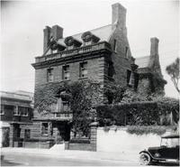
Bourn Mansion
A brooding mansion of clinker brick stands out among the Victorian houses of Pacific Heights William Bourn II was said to be the richest man in San Francisco. Inheriting a fortune in mining, and then later building up Pacific, Gas and Electric, now known as PG&E. In fact he may have even been one of the richest men in the world when he built his grandiose town house in the posh neighborhood of Pacific Heights.
Modest by Bourn's standards, this 27-room mansion was built in 1896 by Willis Polk. A masterpiece of the bricklayers' and stonemasons' arts, the mansion was only one of the elaborate buildings Bourn owned, the likes of which included palatial Empire Mine in Grass Valley, CA., and the Bourn's famous estate, Filoli in Woodside.
Despite it's classic, upper crust beginnings, the 70's were a crazy time in San Francisco, and the mansion saw it's share of debauchery. Purchased by eccentric Arden Van Upp, what was once a classy, Georgian-style home became a swinging party pad. The perfect place for lavish hedonism, the mansion was visited by rockstars, movie stars, porn stars, and overflowed with good drugs, fine wines, and sexual abandon.
Eventually, the party ended, and like most narcissistic eccentrics, Arden Van Upp fell out of favor, while the house fell into disrepair. She became a shut in, her only companions her white Chinchilla Persian cats. Garbage piled up, as did the debt and the lawsuits. Eventually, Van Upp became bankrupt and the house was deemed uninhabitable. By 1998, the mansion was so decimated that the homeless people squatting inside had to move onto the yard.
The house was finally cleaned up and sold at auction in 2010, and despite assessments that repair would cost quite a bit more than the house is worth, it remains a Historical Landmark and still stands at 2550 Webster Street. Locals who are attached to the mansion with the hard-luck story are hoping that the new owners are willing to restore it's former beauty, despite the cost.
Read more about Bourn Mansion on Atlas Obscura...
Category: Architectural Oddities
Location:
Edited by: rebeccaclara, Rachel, Dylan
Mon, 05 Mar 2012 21:55:00 -0600
The Return of the Cows
The Return of the Cows
The Return of the CowsArt and a pun, all in one.There aren't many reasons to visit quiet Dietrich-Bonhoeffer Strasse, which lies on the bleeding edge of gentrified Prinzlauerberg's encroachment into (formerly) gritty Friedrichshain. But Sergej Dott's whimsical public art installation, "Die Rückkehr der Kühe" ("The Return of the Cows") just might make it worth the trip.
Halfway down the block, if you peer into the empty lot and look up, you'll see a green field full of larger-than-life cows "walking" up and down the side of a pre-war Berlin apartment house.
Dott specializes in public installations, including the cow installations he calls "Kuhunst." Savvy Germanophiles will recognize the pun on the German words for art ("Kunst") and cow ("Kuh"). Another can be found just west of The Return of the Cows, at Kollwitzstraße 18 in Prinzlauerberg.Read more about The Return of the Cows on Atlas Obscura...Category: Architectural Oddities, Outsider ArchitectureLocation: Berlin, GermanyEdited by: rebeccaclara, Rachel
The Return of the Cows
Art and a pun, all in one.There aren't many reasons to visit quiet Dietrich-Bonhoeffer Strasse, which lies on the bleeding edge of gentrified Prinzlauerberg's encroachment into (formerly) gritty Friedrichshain. But Sergej Dott's whimsical public art installation, "Die Rückkehr der Kühe" ("The Return of the Cows") just might make it worth the trip.
Halfway down the block, if you peer into the empty lot and look up, you'll see a green field full of larger-than-life cows "walking" up and down the side of a pre-war Berlin apartment house.
Dott specializes in public installations, including the cow installations he calls "Kuhunst." Savvy Germanophiles will recognize the pun on the German words for art ("Kunst") and cow ("Kuh"). Another can be found just west of The Return of the Cows, at Kollwitzstraße 18 in Prinzlauerberg.
Read more about The Return of the Cows on Atlas Obscura...
Category: Architectural Oddities, Outsider Architecture
Location: Berlin, Germany
Edited by: rebeccaclara, Rachel
Sun, 04 Mar 2012 22:33:00 -0600
Berlin Botanical Garden
Berlin Botanical Garden
Berlin Botanical GardenStarted as a kitchen garden, now the second largest botanical garden in the worldEstablished as a kitchen garden in 1679, the Botanical Garden in Berlin is the second largest botanical garden in the world, second only to Kew Gardens, located in England.
The garden evolved from a kitchen garden growing vegetables and hops for beer brewing to a “considerable plant assemblage,” and in 1879 the Royal Botanical Museum was founded, encompassing every area of botany.
The sheer size of the gardens and the lush density of the plant life is overwhelming, especially when taking into account that so many of these plants are endangered in their natural habitats. What grows strong and vibrant in this collection is often threatened with extinction elsewhere. This assembly of gardens, sixteen greenhouses, and landscapes exhibit a microcosm of nature's diversity, home to flowered vines, rock cliff waterfalls, timber bamboo reaching to the sky, and a carpet of ferns, orchids, and bromeliads at your feet.
The Victoria House delivers a proper tropical environment with sweltering humidity that the orchids and lilies love, a bamboo bridge that transports you over the basin and into an exotic plant paradise.
With 43 hectares and close to 22,000 plant species, one visit won't even come close to allowing you to see everything. Make sure you make the most of your day there and don't miss the Great Pavillion, which at 20 meters high and 30x60 meters in floor area is the largest glass house in the world.
Other must see displays include the giant water lilies, carnivorous plant specimens, and a small cemetery, located to the left of the green house complex when coming from access at the Königin-Luise-Platz. Keep a look out for the sarcophagus of Friedrich Althoff, a university tutor deceased in 1908, which consists of a dolorous female figure meant to represent science in mourning.
Also of interest, but currently not open to the public (or anyone for that matter) is a series of tunnels built near the Botanical Gardens in WWII. Entrance to the bunker was through two tunnels leading from the farm of the botanical garden. Built for the SS to house personal and files during air raids, after the war the entrances were blown up, and the tunnels now serve as a winter roost for bats.Read more about Berlin Botanical Garden on Atlas Obscura...Category: Extraordinary Flora, Natural History, Horticultural MarvelsLocation: Berlin, GermanyEdited by: Rachel, Dylan
Berlin Botanical Garden
Started as a kitchen garden, now the second largest botanical garden in the worldEstablished as a kitchen garden in 1679, the Botanical Garden in Berlin is the second largest botanical garden in the world, second only to Kew Gardens, located in England.
The garden evolved from a kitchen garden growing vegetables and hops for beer brewing to a “considerable plant assemblage,” and in 1879 the Royal Botanical Museum was founded, encompassing every area of botany.
The sheer size of the gardens and the lush density of the plant life is overwhelming, especially when taking into account that so many of these plants are endangered in their natural habitats. What grows strong and vibrant in this collection is often threatened with extinction elsewhere. This assembly of gardens, sixteen greenhouses, and landscapes exhibit a microcosm of nature's diversity, home to flowered vines, rock cliff waterfalls, timber bamboo reaching to the sky, and a carpet of ferns, orchids, and bromeliads at your feet.
The Victoria House delivers a proper tropical environment with sweltering humidity that the orchids and lilies love, a bamboo bridge that transports you over the basin and into an exotic plant paradise.
With 43 hectares and close to 22,000 plant species, one visit won't even come close to allowing you to see everything. Make sure you make the most of your day there and don't miss the Great Pavillion, which at 20 meters high and 30x60 meters in floor area is the largest glass house in the world.
Other must see displays include the giant water lilies, carnivorous plant specimens, and a small cemetery, located to the left of the green house complex when coming from access at the Königin-Luise-Platz. Keep a look out for the sarcophagus of Friedrich Althoff, a university tutor deceased in 1908, which consists of a dolorous female figure meant to represent science in mourning.
Also of interest, but currently not open to the public (or anyone for that matter) is a series of tunnels built near the Botanical Gardens in WWII. Entrance to the bunker was through two tunnels leading from the farm of the botanical garden. Built for the SS to house personal and files during air raids, after the war the entrances were blown up, and the tunnels now serve as a winter roost for bats.
Read more about Berlin Botanical Garden on Atlas Obscura...
Category: Extraordinary Flora, Natural History, Horticultural Marvels
Location: Berlin, Germany
Edited by: Rachel, Dylan
Mon, 26 Mar 2012 21:50:00 -0500
Albany Shoe Tree
Albany Shoe Tree
Albany Shoe TreeOne tree's homage to humanity past and presentIf there's one thing small-town folks in Indiana know, it's not to let something special pass them by. If that thing is a little strange, well, it won't be for long. Such was the case with the "Shoe Tree" in Albany, Indiana, which started as a quirky tradition for local teenagers, but grew to be embraced by the entire community.
It's not altogether unusual to see a pair of old shoes tied together and hanging somewhere public - in a tree, on some power lines, or off an overhang. But in Albany, one grew to hundreds, and became a local point of pride.
The actual number of shoes hanging from the Shoe Tree fluctuates more than one might think, with weather and curious or meddlesome visitors playing their part in the maintenance of the tree (or lack thereof). But on a warm summer day, it might be worth a stroll to this point of communal history, to see just how many people have chosen to proudly participate.Read more about Albany Shoe Tree on Atlas Obscura...Category: Extraordinary Flora, Outsider Art, Unique CollectionsLocation: Edited by: Mark_Casey, Dylan, Rachel
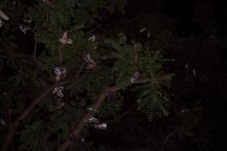
Albany Shoe Tree
One tree's homage to humanity past and presentIf there's one thing small-town folks in Indiana know, it's not to let something special pass them by. If that thing is a little strange, well, it won't be for long. Such was the case with the "Shoe Tree" in Albany, Indiana, which started as a quirky tradition for local teenagers, but grew to be embraced by the entire community.
It's not altogether unusual to see a pair of old shoes tied together and hanging somewhere public - in a tree, on some power lines, or off an overhang. But in Albany, one grew to hundreds, and became a local point of pride.
The actual number of shoes hanging from the Shoe Tree fluctuates more than one might think, with weather and curious or meddlesome visitors playing their part in the maintenance of the tree (or lack thereof). But on a warm summer day, it might be worth a stroll to this point of communal history, to see just how many people have chosen to proudly participate.
Read more about Albany Shoe Tree on Atlas Obscura...
Category: Extraordinary Flora, Outsider Art, Unique Collections
Location:
Edited by: Mark_Casey, Dylan, Rachel
Mon, 26 Mar 2012 09:01:00 -0500
Mooresville's Gravity Hill
Mooresville's Gravity Hill
Mooresville's Gravity HillThis mysterious hill seems to pull objects uphillIt's best to be careful when driving along country roads - and particularly if those roads are in Mooresville, Indiana. One could encounter any number of creatures or farm equipment on a typical country lane, but in Mooresville, you're also likely to encounter basketballs, cars parked in neutral and maybe even a few curious pedestrians holding bags of flour - all at the bottom of one captivating hill which seems to be pulling everything upward, against gravity.
Mooresville's famous Gravity Hill (near Magnetic Acres) is an optical illusion, but it is a convincing one. If one were to put their car in neutral at the "bottom" of the hill (or place a ball in the road, for the safety-conscious), the hill will immediately start to pull it "up" - in the wrong direction, according to our old friend gravity.
Legend has it that a school bus stalled at the bottom of this hill decades ago when it intersected with a railroad track, then was struck by an oncoming train, killing several riders. Nowadays, the locals will tell you that it's the spirits of the children on that bus that push things uphill and out of harm's way. They'll even instruct you to sprinkle some flour on your bumper - in which the children's fingerprints supposedly appear after you've been pushed to safety.Read more about Mooresville's Gravity Hill on Atlas Obscura...Category: Optical OdditiesLocation: Edited by: Mark_Casey, Dylan
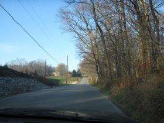
Mooresville's Gravity Hill
This mysterious hill seems to pull objects uphillIt's best to be careful when driving along country roads - and particularly if those roads are in Mooresville, Indiana. One could encounter any number of creatures or farm equipment on a typical country lane, but in Mooresville, you're also likely to encounter basketballs, cars parked in neutral and maybe even a few curious pedestrians holding bags of flour - all at the bottom of one captivating hill which seems to be pulling everything upward, against gravity.
Mooresville's famous Gravity Hill (near Magnetic Acres) is an optical illusion, but it is a convincing one. If one were to put their car in neutral at the "bottom" of the hill (or place a ball in the road, for the safety-conscious), the hill will immediately start to pull it "up" - in the wrong direction, according to our old friend gravity.
Legend has it that a school bus stalled at the bottom of this hill decades ago when it intersected with a railroad track, then was struck by an oncoming train, killing several riders. Nowadays, the locals will tell you that it's the spirits of the children on that bus that push things uphill and out of harm's way. They'll even instruct you to sprinkle some flour on your bumper - in which the children's fingerprints supposedly appear after you've been pushed to safety.
Read more about Mooresville's Gravity Hill on Atlas Obscura...
Category: Optical Oddities
Location:
Edited by: Mark_Casey, Dylan
Sun, 25 Mar 2012 21:30:00 -0500
Pigeon Point Lighthouse
Pigeon Point Lighthouse
Pigeon Point LighthouseA New England-style lighthouse along California's beautiful Highway 1 gets a re-doDriving down the coast along California's famous Highway 1 is many a road tripper's dream. Adventurous sightseers can take it from misty Portland to sunny San Diego, but the most famous stretch is beautiful central coast of California, between San Francisco and Big Sur. There you'll expect to find innumerable beaches, windswept mountains and rocky cliffs, but you might not expect to find a New England-style lighthouse rising out of the surf.
Pigeon Point Lighthouse rests at the top of a cliff, far above the crashing surf thundering through the rocks it was built to warn ships against. Built in 1872, the lighthouse is still operational, though only as a navigational aid for the US Coast Guard training purposes. Mostly, it's a picturesque piece of history that was almost lost to the sands of time.
The lighthouse and the land it's built upon have always belonged to the State of California. However, for several decades in the mid-twentieth century, the land was leased and used by the Coast Guard. Terms of the lease allowed the Coast Guard to perform only routine maintenance to the lighthouse, but not major restoration, and as a result it fell into disrepair.
Relatively recently, the lighthouse was returned back into the hands of the state, and a restoration effort has begun. Donations are being accepted from the public to help fund the landmark's repair and preservation. One of the more exciting aspects of the restoration, replacing the massive Fresnel lens, took place in November 2011. The Fresnel lens is 16 feet tall, 6 feet in diameter, and weighs 8,000 pounds.
A hostel is also operated on the lighthouse grounds, offering mostly young travelers incredible views of the ocean and surrounding scenery for as little as $23.00 per night. Amenities are in short supply and the area is remote, but the location is unbelievable.Read more about Pigeon Point Lighthouse on Atlas Obscura...Category: Instruments of ScienceLocation: Edited by: Mark_Casey, Rachel
Pigeon Point Lighthouse
A New England-style lighthouse along California's beautiful Highway 1 gets a re-doDriving down the coast along California's famous Highway 1 is many a road tripper's dream. Adventurous sightseers can take it from misty Portland to sunny San Diego, but the most famous stretch is beautiful central coast of California, between San Francisco and Big Sur. There you'll expect to find innumerable beaches, windswept mountains and rocky cliffs, but you might not expect to find a New England-style lighthouse rising out of the surf.
Pigeon Point Lighthouse rests at the top of a cliff, far above the crashing surf thundering through the rocks it was built to warn ships against. Built in 1872, the lighthouse is still operational, though only as a navigational aid for the US Coast Guard training purposes. Mostly, it's a picturesque piece of history that was almost lost to the sands of time.
The lighthouse and the land it's built upon have always belonged to the State of California. However, for several decades in the mid-twentieth century, the land was leased and used by the Coast Guard. Terms of the lease allowed the Coast Guard to perform only routine maintenance to the lighthouse, but not major restoration, and as a result it fell into disrepair.
Relatively recently, the lighthouse was returned back into the hands of the state, and a restoration effort has begun. Donations are being accepted from the public to help fund the landmark's repair and preservation. One of the more exciting aspects of the restoration, replacing the massive Fresnel lens, took place in November 2011. The Fresnel lens is 16 feet tall, 6 feet in diameter, and weighs 8,000 pounds.
A hostel is also operated on the lighthouse grounds, offering mostly young travelers incredible views of the ocean and surrounding scenery for as little as $23.00 per night. Amenities are in short supply and the area is remote, but the location is unbelievable.
Read more about Pigeon Point Lighthouse on Atlas Obscura...
Category: Instruments of Science
Location:
Edited by: Mark_Casey, Rachel
Fri, 23 Mar 2012 12:17:00 -0500
Haraldskær Woman
Haraldskær Woman
Haraldskær WomanBog body on display in Danish church In 1835, while excavating some peat on an estate in Jutland, Denmark, farmers found a female body lying supine in a bog. Once the farmers removed the layers of branches that covered the body, they saw that she was naked and had a leather cape and woolen garments folded atop her abdomen. If not for the antiquated garb, the farmers––because of the excellent condition of the body–– thought the woman had died only recently.
Once the body was taken to a lab for further examination, forensic biologists marveled at her well-preserved skin, deeply bronzed because of the tannins in the peat. Every single organ in her body remained intact, with no sign of degenerative disease. The doctors determined she was about 50 at her time of death in 490 BC; they determined she stood about 4’11.
In 2000, scientists revisited the case of the Hardaldskaer Woman (named for the estate where she was discovered), and found that her stomach content revealed a diet of unhusked millet and blackberries. They also found a distinct bruising around her neck, suggesting that a rope had once been tied around this area. Scientists also assumed that the woman had already died before the branches fell over her, pinning her body further down into the bog. Because of her nudity, careful placement in the bog, and since cremation was the most popular way to intern someone in that period of Jutland, the scientists deduced that the Haraldskaer Woman was a victim of religious sacrifice.
Now the Haraldskaer Woman rests in an ornately carved sarcophagus in the St. Nicolai Church in Vejle, Denmark. There is only a simple glass covering over the body; she seems to rest peacefully as visitors the world over pay homage to one of the only human remains of the Iron Age.Read more about Haraldskær Woman on Atlas Obscura...Category: MummiesLocation: Edited by: acclarkey, Dylan
Haraldskær Woman
Bog body on display in Danish church In 1835, while excavating some peat on an estate in Jutland, Denmark, farmers found a female body lying supine in a bog. Once the farmers removed the layers of branches that covered the body, they saw that she was naked and had a leather cape and woolen garments folded atop her abdomen. If not for the antiquated garb, the farmers––because of the excellent condition of the body–– thought the woman had died only recently.
Once the body was taken to a lab for further examination, forensic biologists marveled at her well-preserved skin, deeply bronzed because of the tannins in the peat. Every single organ in her body remained intact, with no sign of degenerative disease. The doctors determined she was about 50 at her time of death in 490 BC; they determined she stood about 4’11.
In 2000, scientists revisited the case of the Hardaldskaer Woman (named for the estate where she was discovered), and found that her stomach content revealed a diet of unhusked millet and blackberries. They also found a distinct bruising around her neck, suggesting that a rope had once been tied around this area. Scientists also assumed that the woman had already died before the branches fell over her, pinning her body further down into the bog. Because of her nudity, careful placement in the bog, and since cremation was the most popular way to intern someone in that period of Jutland, the scientists deduced that the Haraldskaer Woman was a victim of religious sacrifice.
Now the Haraldskaer Woman rests in an ornately carved sarcophagus in the St. Nicolai Church in Vejle, Denmark. There is only a simple glass covering over the body; she seems to rest peacefully as visitors the world over pay homage to one of the only human remains of the Iron Age.
Read more about Haraldskær Woman on Atlas Obscura...
Category: Mummies
Location:
Edited by: acclarkey, Dylan
Fri, 23 Mar 2012 01:00:00 -0500
The Museum of Historical Memory
The Museum of Historical Memory
The Museum of Historical Memory An exhibit dedicated to a Lithuanian partisan A subdivision of The Museum of Preienai in Lithuania, the Museum of Historical Memory opened in 2008 and houses an exhibit of Lithuanian partisan, Juozas Luksa–Daumantas.
After World War II, Luksa-Daumantas was a prominent leader of the Lithuanian partisans, working to resist Soviet Occupation. Several historical documents are on display at the museum, like photographs and books by local authors that detail Luska-Daumantas's heroism during Post-War Lithuania. The exhibition also talks about his brother who was another crucial member of the partisan movement.Read more about The Museum of Historical Memory on Atlas Obscura...Category: Museums and CollectionsLocation: Veiveriai, LithuaniaEdited by: acclarkey, Dylan
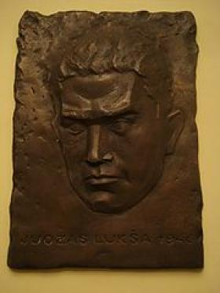
The Museum of Historical Memory
An exhibit dedicated to a Lithuanian partisan A subdivision of The Museum of Preienai in Lithuania, the Museum of Historical Memory opened in 2008 and houses an exhibit of Lithuanian partisan, Juozas Luksa–Daumantas.
After World War II, Luksa-Daumantas was a prominent leader of the Lithuanian partisans, working to resist Soviet Occupation. Several historical documents are on display at the museum, like photographs and books by local authors that detail Luska-Daumantas's heroism during Post-War Lithuania. The exhibition also talks about his brother who was another crucial member of the partisan movement.
Read more about The Museum of Historical Memory on Atlas Obscura...
Category: Museums and Collections
Location: Veiveriai, Lithuania
Edited by: acclarkey, Dylan
Tue, 20 Mar 2012 21:30:00 -0500
The Pools of Castellnou
The Pools of Castellnou
The Pools of CastellnouCursed swimming pool left abandoned is now a favorite of filmmakers and ghost huntersIn the 1980's, the people of Barcelona would flock to the Castellnou Pools for summer reveling and good, old-fashioned fun. Bussing in from all over the province, they would wile away the hot days enjoying Castellnou's two giant, refreshing pools, as well as mini golf, a cafeteria, Olympic sized trampolines and other recreational amusements.
One year, damaging rumors began to spread like wildfire among the guests of Castellnou Pools and made their way into nearby towns. The gossip alleged that the pools were not safe, and in fact were downright deadly. These stories were backed up by tales of several children leaping from the top of the trampoline to their gory deaths, but no one could properly identify these boys that supposedly perished. Despite the lack of evidence that these deaths even took place, the word of mouth brought on the demise of this once bustling recreation goliath.
After decades of abandonment and neglect, the pools are now a golconda for graffiti artists, skateboarders, bikers, independent film makers and of course, ghost hunters. Many parapsychologists claim the place is teeming with supernatural activity, regardless of the unrelenting lack of true evidence that anyone ever died there. Cursed or no, the ruins are tragically beautiful and decrepit, a dilapidated memory of a more innocent time.Read more about The Pools of Castellnou on Atlas Obscura...Category: Incredible Ruins, Subterranean SitesLocation: Barcelona, SpainEdited by: serflac, Rachel
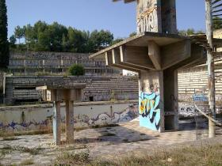
The Pools of Castellnou
Cursed swimming pool left abandoned is now a favorite of filmmakers and ghost huntersIn the 1980's, the people of Barcelona would flock to the Castellnou Pools for summer reveling and good, old-fashioned fun. Bussing in from all over the province, they would wile away the hot days enjoying Castellnou's two giant, refreshing pools, as well as mini golf, a cafeteria, Olympic sized trampolines and other recreational amusements.
One year, damaging rumors began to spread like wildfire among the guests of Castellnou Pools and made their way into nearby towns. The gossip alleged that the pools were not safe, and in fact were downright deadly. These stories were backed up by tales of several children leaping from the top of the trampoline to their gory deaths, but no one could properly identify these boys that supposedly perished. Despite the lack of evidence that these deaths even took place, the word of mouth brought on the demise of this once bustling recreation goliath.
After decades of abandonment and neglect, the pools are now a golconda for graffiti artists, skateboarders, bikers, independent film makers and of course, ghost hunters. Many parapsychologists claim the place is teeming with supernatural activity, regardless of the unrelenting lack of true evidence that anyone ever died there. Cursed or no, the ruins are tragically beautiful and decrepit, a dilapidated memory of a more innocent time.
Read more about The Pools of Castellnou on Atlas Obscura...
Category: Incredible Ruins, Subterranean Sites
Location: Barcelona, Spain
Edited by: serflac, Rachel
Tue, 20 Mar 2012 10:01:00 -0500
Rustic Canyon's Murphy Ranch
Rustic Canyon's Murphy Ranch
Rustic Canyon's Murphy RanchWorld War II-era Nazi compound nestled in the Santa Monica hillsHidden under dense foliage and down a treacherous decaying flight of hundreds of concrete stairs lies a World War II-era enigma. The now heavily graffiti-tagged Murphy Ranch sits nestled on a canyon floor between Will Rogers State Park, a Boy Scout camp, and a substantial, upscale housing development. Local journalists and at least one historian speak of the wonder and mythology of this fascinating historic ruin.
Now property of Los Angeles City parks, Murphy Ranch was originally developed to be a self-sustaining compound in the 1930s. It was originally purchased in 1933 by Jessie Murphy -- a person never seen nor documented elsewhere. Despite the phantom owner, the property was developed by Winona and Norman Stephens and a German national by the name of Herr Schmidt. The design implemented was an installation of several buildings, fuel tanks, and multiple massive cisterns. The entire complex, according the plans of Herr Schmidt, was to be self-sustaining even if it suffered years of isolation from the outside society. Schmidt's motivations, however, remain the focus of the lore.
A suspected Nazi sympathizer, Schmidt had a domineering personality. He convinced the Stephens to pour some $4 million in the construction of the ranch in Rustic Canyon. Despite a commanding presence, Schmidt was limited in his ambitions by the Stephens' assets. Plans to expand the compound were halted as the Stephens -- though still loyal to Schmidt -- ran dry. Schmidt, according to legend, persisted in pursing his dream of a Nazi holdout in America until the end of the war. This dream was shattered in December of 1941. Immediately after entering the war, United States Federal Agents raided (or are said to have raided) the compound hidden in the woods. Schmidt and his followers lost their dream, as they had the entire time been under the watchful eye of intelligence officials.
Abandoned for decades after the war, Murphy Ranch experienced a brief revival in the 1960s and 1970s. An artists' colony started itself there, just outside of the reach of bustling Los Angeles and Santa Monica. Wildfires in the canyon system ended the Ranch's renaissance, however, driving out the artists' colony permanently.
There are two popular approaches to Murphy Ranch. One is for hikers coming from neighboring Will Rogers State Park. The other is from the residential road Capri Drive. Hike north along Sullivan Fire Road until you reach a concrete staircase on the left after about 2/3 of a mile. If you miss it, don't worry, there is another, more roundabout entrance at a set of stone gates that follows the old driveway down. Using the staircase route makes the hiker feel like Rocky Balboa, descending over 500 steps some 200-plus feet in elevation. At the bottom you'll see tucked away under the trees -- like a lost temple of old -- the tagged piers and vacant windows of the remains of Murphy Ranch.Read more about Rustic Canyon's Murphy Ranch on Atlas Obscura...Category: Architectural Oddities, Incredible Ruins, Outsider ArchitectureLocation: Edited by: Cheddar, Nicholas Jackson, Rachel, Seth Teicher
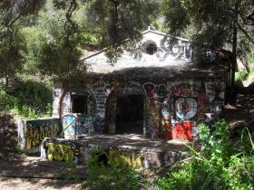
Rustic Canyon's Murphy Ranch
World War II-era Nazi compound nestled in the Santa Monica hillsHidden under dense foliage and down a treacherous decaying flight of hundreds of concrete stairs lies a World War II-era enigma. The now heavily graffiti-tagged Murphy Ranch sits nestled on a canyon floor between Will Rogers State Park, a Boy Scout camp, and a substantial, upscale housing development. Local journalists and at least one historian speak of the wonder and mythology of this fascinating historic ruin.
Now property of Los Angeles City parks, Murphy Ranch was originally developed to be a self-sustaining compound in the 1930s. It was originally purchased in 1933 by Jessie Murphy -- a person never seen nor documented elsewhere. Despite the phantom owner, the property was developed by Winona and Norman Stephens and a German national by the name of Herr Schmidt. The design implemented was an installation of several buildings, fuel tanks, and multiple massive cisterns. The entire complex, according the plans of Herr Schmidt, was to be self-sustaining even if it suffered years of isolation from the outside society. Schmidt's motivations, however, remain the focus of the lore.
A suspected Nazi sympathizer, Schmidt had a domineering personality. He convinced the Stephens to pour some $4 million in the construction of the ranch in Rustic Canyon. Despite a commanding presence, Schmidt was limited in his ambitions by the Stephens' assets. Plans to expand the compound were halted as the Stephens -- though still loyal to Schmidt -- ran dry. Schmidt, according to legend, persisted in pursing his dream of a Nazi holdout in America until the end of the war. This dream was shattered in December of 1941. Immediately after entering the war, United States Federal Agents raided (or are said to have raided) the compound hidden in the woods. Schmidt and his followers lost their dream, as they had the entire time been under the watchful eye of intelligence officials.
Abandoned for decades after the war, Murphy Ranch experienced a brief revival in the 1960s and 1970s. An artists' colony started itself there, just outside of the reach of bustling Los Angeles and Santa Monica. Wildfires in the canyon system ended the Ranch's renaissance, however, driving out the artists' colony permanently.
There are two popular approaches to Murphy Ranch. One is for hikers coming from neighboring Will Rogers State Park. The other is from the residential road Capri Drive. Hike north along Sullivan Fire Road until you reach a concrete staircase on the left after about 2/3 of a mile. If you miss it, don't worry, there is another, more roundabout entrance at a set of stone gates that follows the old driveway down. Using the staircase route makes the hiker feel like Rocky Balboa, descending over 500 steps some 200-plus feet in elevation. At the bottom you'll see tucked away under the trees -- like a lost temple of old -- the tagged piers and vacant windows of the remains of Murphy Ranch.
Read more about Rustic Canyon's Murphy Ranch on Atlas Obscura...
Category: Architectural Oddities, Incredible Ruins, Outsider Architecture
Location:
Edited by: Cheddar, Nicholas Jackson, Rachel, Seth Teicher
Mon, 19 Mar 2012 12:35:00 -0500
Seattle's Official Bad Art Museum of Art
Seattle's Official Bad Art Museum of Art
Seattle's Official Bad Art Museum of ArtSeattle's own bad art museum located inside Cafe RacerThe Official Bad Art Museum of Art (also known by the acronym "OBAMA") is located inside Cafe Racer in Seattle. Black velvet paintings, paint-by-numbers, children with big eyes, dogs playing poker -- they're all here for amusement, enjoyment and edification.
The Official Bad Art Museum of Art, located inside Cafe Racer, attracts an unusual type of person, one who appreciates visions of the absurd. The interior is painted in a shade that is reminiscent of a Cheeto. Denizens and derelicts come and go, art lovers, art haters, musicians, artists, and anti-artists, all mingle freely surrounded by the multitude of bad art that abounds on every wall.
The house band, which plays every First Thursday of the month, is called "God's Favorite Beefcake" and is made up of runaways from the Seattle performance group Circus Contraption.
Cafe Racer itself has some unusual menu items including the "Wonder Wiener." The wonder wiener consists of a polish dog split in half, with a slice of bacon placed inside and grilled. The wiener is then stuffed with cream cheese, green chilies and onions, and served on a toasted bun spread with special sauces mayotard and waa-la. Due to the artery clogging potential, they recommend only one per week.
Also located on the premises of Cafe Racer is Cafe RAZOR, a full-service barber and beauty salon. Grab a beer and get a quick cut, shave or style. Live music is also a regular addition to the cafe, as are rotating "Real Art" shows, on a monthly basis.Read more about Seattle's Official Bad Art Museum of Art on Atlas Obscura...Category: Bizarre Restaurants and BarsLocation: Edited by: marlowharris, Dylan
Seattle's Official Bad Art Museum of Art
Seattle's own bad art museum located inside Cafe RacerThe Official Bad Art Museum of Art (also known by the acronym "OBAMA") is located inside Cafe Racer in Seattle. Black velvet paintings, paint-by-numbers, children with big eyes, dogs playing poker -- they're all here for amusement, enjoyment and edification.
The Official Bad Art Museum of Art, located inside Cafe Racer, attracts an unusual type of person, one who appreciates visions of the absurd. The interior is painted in a shade that is reminiscent of a Cheeto. Denizens and derelicts come and go, art lovers, art haters, musicians, artists, and anti-artists, all mingle freely surrounded by the multitude of bad art that abounds on every wall.
The house band, which plays every First Thursday of the month, is called "God's Favorite Beefcake" and is made up of runaways from the Seattle performance group Circus Contraption.
Cafe Racer itself has some unusual menu items including the "Wonder Wiener." The wonder wiener consists of a polish dog split in half, with a slice of bacon placed inside and grilled. The wiener is then stuffed with cream cheese, green chilies and onions, and served on a toasted bun spread with special sauces mayotard and waa-la. Due to the artery clogging potential, they recommend only one per week.
Also located on the premises of Cafe Racer is Cafe RAZOR, a full-service barber and beauty salon. Grab a beer and get a quick cut, shave or style. Live music is also a regular addition to the cafe, as are rotating "Real Art" shows, on a monthly basis.
Read more about Seattle's Official Bad Art Museum of Art on Atlas Obscura...
Category: Bizarre Restaurants and Bars
Location:
Edited by: marlowharris, Dylan
Sun, 18 Mar 2012 21:22:00 -0500
Abigail's Elegant Victorian Mansion
Abigail's Elegant Victorian Mansion
Abigail's Elegant Victorian MansionExperience the "opulence, grace, and grandeur of Eureka's most famous Victorian Inn."A combination bed and breakfast, living history museum, and eccentric collection of Victorian-themed memorabilia, Abigail's Elegant Victorian Mansion is a place that truly has to be seen to be believed.
It's an 1888 Victorian home nestled in a quiet neighborhood along the rugged Northern California coast that from the outside, appears to be a classic Stick-Eastlake or Queen Anne Victorian, retaining its original gingerbread decoration and pale gray paint color. This house is different from the other 19th century homes remaining in the area however, the inside of the house has been completely redecorated in an eccentric and completely over-the-top Victorian fashion.
The Victorians are known for viewing what some would call "clutter" as sophisticated decor. They prized ornate, floral, and excessive decoration. With the importance of class distinctions, Victorians were eager to display their wealth in every corner of the house. Curio collections were crowded along mantels, striped or floral wallpaper hung next to imitation leather wall-coverings. As far as interior decoration went, more was never enough.
The owners of Abigail's have taken the Victorian design principles to heart. Each of the three parlors and four bedrooms boasts lush Victorian trimmings like brocaded French velvet wall covering, crystal chandeliers, thick gold and red drapes between rooms, and art paper on the ceilings, and the bookcases are stuffed with replication Victorian catalogs and Victorian-themed novels. Some of the items are more expected (a gramophone) than others (a stuffed turkey wearing eyeglasses in a metal cage). Each room has its own theme, ranging from the Turkish sitting room to the Van Gogh room decked with Belgian furniture. The Victorian actress and singer Lillie Langtree supposedly stayed in the bedroom named after her.
Although Victorian houses often included Fainting Rooms with a chaise lounge and smelling salts for women, Abigail's Victorian Mansion is not for the faint of heart, or the discriminating minimalist.Read more about Abigail's Elegant Victorian Mansion on Atlas Obscura...Category: Architectural Oddities, Eccentric Homes, Outsider ArchitectureLocation: Edited by: rebeccaclara, Rachel, Seth Teicher
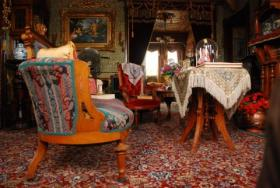
Abigail's Elegant Victorian Mansion
Experience the "opulence, grace, and grandeur of Eureka's most famous Victorian Inn."A combination bed and breakfast, living history museum, and eccentric collection of Victorian-themed memorabilia, Abigail's Elegant Victorian Mansion is a place that truly has to be seen to be believed.
It's an 1888 Victorian home nestled in a quiet neighborhood along the rugged Northern California coast that from the outside, appears to be a classic Stick-Eastlake or Queen Anne Victorian, retaining its original gingerbread decoration and pale gray paint color. This house is different from the other 19th century homes remaining in the area however, the inside of the house has been completely redecorated in an eccentric and completely over-the-top Victorian fashion.
The Victorians are known for viewing what some would call "clutter" as sophisticated decor. They prized ornate, floral, and excessive decoration. With the importance of class distinctions, Victorians were eager to display their wealth in every corner of the house. Curio collections were crowded along mantels, striped or floral wallpaper hung next to imitation leather wall-coverings. As far as interior decoration went, more was never enough.
The owners of Abigail's have taken the Victorian design principles to heart. Each of the three parlors and four bedrooms boasts lush Victorian trimmings like brocaded French velvet wall covering, crystal chandeliers, thick gold and red drapes between rooms, and art paper on the ceilings, and the bookcases are stuffed with replication Victorian catalogs and Victorian-themed novels. Some of the items are more expected (a gramophone) than others (a stuffed turkey wearing eyeglasses in a metal cage). Each room has its own theme, ranging from the Turkish sitting room to the Van Gogh room decked with Belgian furniture. The Victorian actress and singer Lillie Langtree supposedly stayed in the bedroom named after her.
Although Victorian houses often included Fainting Rooms with a chaise lounge and smelling salts for women, Abigail's Victorian Mansion is not for the faint of heart, or the discriminating minimalist.
Read more about Abigail's Elegant Victorian Mansion on Atlas Obscura...
Category: Architectural Oddities, Eccentric Homes, Outsider Architecture
Location:
Edited by: rebeccaclara, Rachel, Seth Teicher
Fri, 16 Mar 2012 04:31:00 -0500
Koh Hingham
Koh Hingham
Koh HinghamThe cursed island of black pebblesIn Thailand stands Ko Hingham, a small uninhabited island which no one would ever bother to visit. Unless, of course the Gods had decided to adorn the entire island with precious stones. Which according to Thai mythology, they did.
Precious, indeed, because the Gods – precisely the God of Tarutao, a Thai deity – is said to have placed a curse onto the island. Any visitor who would dared to take even a pebble off the island would be cursed forever. Each year the the National Park office which manages the island receives dozens of stones returned via mail, sent back by people who want to lift the curse. The stones of Koh Hingham must stay on Koh Hingham or you risk the wrath of Tarutao!
Even though you cannot take the stones home, you can play with them within the boundaries of the island for as long as your inner child wishes to do so. Thai people, for example, use them to build miniaturized cheddis and kneeling in front of them, they lay their most ardent wishes and prayers. Less mystically, tourists write short messages in black and white such as flower-powers and I-love-yous. Come and do the same, just leave the stones behind.Read more about Koh Hingham on Atlas Obscura...Category: Geological OdditiesLocation: Edited by: BradFlorescu, Dylan
Koh Hingham
The cursed island of black pebblesIn Thailand stands Ko Hingham, a small uninhabited island which no one would ever bother to visit. Unless, of course the Gods had decided to adorn the entire island with precious stones. Which according to Thai mythology, they did.
Precious, indeed, because the Gods – precisely the God of Tarutao, a Thai deity – is said to have placed a curse onto the island. Any visitor who would dared to take even a pebble off the island would be cursed forever. Each year the the National Park office which manages the island receives dozens of stones returned via mail, sent back by people who want to lift the curse. The stones of Koh Hingham must stay on Koh Hingham or you risk the wrath of Tarutao!
Even though you cannot take the stones home, you can play with them within the boundaries of the island for as long as your inner child wishes to do so. Thai people, for example, use them to build miniaturized cheddis and kneeling in front of them, they lay their most ardent wishes and prayers. Less mystically, tourists write short messages in black and white such as flower-powers and I-love-yous. Come and do the same, just leave the stones behind.
Read more about Koh Hingham on Atlas Obscura...
Category: Geological Oddities
Location:
Edited by: BradFlorescu, Dylan
Wed, 14 Mar 2012 22:50:00 -0500
Body Farm in Pennsylvania
Body Farm in Pennsylvania
Body Farm in PennsylvaniaA macabre farm reserved part of its 222-acres for dead bodies, all in the name of science“Old MacDonald had a farm, ee i ee i oh. And on that farm he had a…pile of dead bodies…?” This will soon be the tune of farmer John O’Laughlin at Grace Lair Farm in Tyrone, Pennsylvania.
Mr. O’Laughlin donated a sizable piece of his 222-acre farm to the California University of Pennsylvania to be used by students and researchers as an outdoor laboratory. This anthropological research center or “body farm” will be a place where human cadavers are analyzed in order to better understand the process of human body decomposition for the sake of forensic analysis. Sadly, it will not be open to the public.
This body farm will be the fifth in the country and the first in the Northeast. The others are located in Tennessee (University of Tennessee), North Carolina (Western Carolina University), and two are in Texas (Texas State University and Sam Houston State University). The smallest, at Western Carolina, can hold up to 10 bodies at a time, while the facility at Texas State University is five acres.
These facilities play an integral role in developments of forensic anthropology. "Whether it's looking at crime scenes, or putting the bodies there, we're going to provide meaningful education to students in the field,” says Dr. John R. Cencich, director of California University’s Institute of Criminological and Forensic Sciences.
The fact that this will be the first facility in the Northeast is notable because it is located in a completely different geographical region from the other four farms. Bodies decompose at different rates depending on the climate, and the more elements human cadavers are exposed to, the quicker the rate of decomposition. Therefore, the hot and humid summers, the cold and snowy winters, and the regular precipitation throughout the year in Pennsylvania offers new discoveries in the field of forensic anthropology.
Plans are still being made and details are still being sorted, but Old MacDonald will soon have a new sort of farm that will keep scientists, students, and investigators well occupied.Read more about Body Farm in Pennsylvania on Atlas Obscura...Category: Strange Science, Memento Mori, Repositories of KnowledgeLocation: Edited by: katiebaker4, Dylan, Rachel
Body Farm in Pennsylvania
A macabre farm reserved part of its 222-acres for dead bodies, all in the name of science“Old MacDonald had a farm, ee i ee i oh. And on that farm he had a…pile of dead bodies…?” This will soon be the tune of farmer John O’Laughlin at Grace Lair Farm in Tyrone, Pennsylvania.
Mr. O’Laughlin donated a sizable piece of his 222-acre farm to the California University of Pennsylvania to be used by students and researchers as an outdoor laboratory. This anthropological research center or “body farm” will be a place where human cadavers are analyzed in order to better understand the process of human body decomposition for the sake of forensic analysis. Sadly, it will not be open to the public.
This body farm will be the fifth in the country and the first in the Northeast. The others are located in Tennessee (University of Tennessee), North Carolina (Western Carolina University), and two are in Texas (Texas State University and Sam Houston State University). The smallest, at Western Carolina, can hold up to 10 bodies at a time, while the facility at Texas State University is five acres.
These facilities play an integral role in developments of forensic anthropology. "Whether it's looking at crime scenes, or putting the bodies there, we're going to provide meaningful education to students in the field,” says Dr. John R. Cencich, director of California University’s Institute of Criminological and Forensic Sciences.
The fact that this will be the first facility in the Northeast is notable because it is located in a completely different geographical region from the other four farms. Bodies decompose at different rates depending on the climate, and the more elements human cadavers are exposed to, the quicker the rate of decomposition. Therefore, the hot and humid summers, the cold and snowy winters, and the regular precipitation throughout the year in Pennsylvania offers new discoveries in the field of forensic anthropology.
Plans are still being made and details are still being sorted, but Old MacDonald will soon have a new sort of farm that will keep scientists, students, and investigators well occupied.
Read more about Body Farm in Pennsylvania on Atlas Obscura...
Category: Strange Science, Memento Mori, Repositories of Knowledge
Location:
Edited by: katiebaker4, Dylan, Rachel
Wed, 14 Mar 2012 22:30:00 -0500
Dunsmuir-Hellman Historic Estate
Dunsmuir-Hellman Historic Estate
Dunsmuir-Hellman Historic EstateNeoclassical Revival mansion and set of horror cult classic PhantasmThe Dunsmuir-Hellman Historic Estate, located in western Oakland, should first and foremost be famous to any true horror fans. It was the filming location of the 1979 horror film Phantasm, and the mansion on the grounds served as the mortuary run by the Tall Man, portrayed by Angus Scrimm.
The Dunsmuir mansion itself, a 37-room building built in the Neoclassical Revival style that was popular during the late 1800s, was designed by San Francisco architect J. Eugene Freeman. It features woodpaneled public rooms, 10 fireplaces, a Tiffany-style dome, and inlaid parquet floors all within its 16,224 square feet. There are servants quarters as well in the house that are designed to accommodate 12 live-in staff.
The Estate takes its name from the two prominent Californian families who owned the house before the City of Oakland bought it in the 1960s. Alexander Dunsmuir came to the United States from Canada in 1878 to manage his family's coal business in the San Francisco Bay Area. He built the house as a wedding gift to his fiancée in 1899, only to die of illness while on their honeymoon in New York. She lived in the house until she died, just two years later in 1901. Isaias W. Hellman, who earned his vast wealth through banking, bought the estate in 1906 as one (of several) summer vacation homes for his family.
The grounds are home to sprawling meadows, gardens and a wide variety of trees including camperdown elms, bunya-bunya and hornbeam.
The estate is open to the public on Wednesdays starting at 11am promptly, and throws occasional events like Easter egg hunts. It can also be rented for events. Flying silver spike spheres not provided.Read more about Dunsmuir-Hellman Historic Estate on Atlas Obscura...Category: Architectural Oddities, Eccentric HomesLocation: Edited by: TrevorShawnElia, Rachel, Dylan, Seth Teicher, rebeccaclara
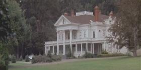
Dunsmuir-Hellman Historic Estate
Neoclassical Revival mansion and set of horror cult classic PhantasmThe Dunsmuir-Hellman Historic Estate, located in western Oakland, should first and foremost be famous to any true horror fans. It was the filming location of the 1979 horror film Phantasm, and the mansion on the grounds served as the mortuary run by the Tall Man, portrayed by Angus Scrimm.
The Dunsmuir mansion itself, a 37-room building built in the Neoclassical Revival style that was popular during the late 1800s, was designed by San Francisco architect J. Eugene Freeman. It features woodpaneled public rooms, 10 fireplaces, a Tiffany-style dome, and inlaid parquet floors all within its 16,224 square feet. There are servants quarters as well in the house that are designed to accommodate 12 live-in staff.
The Estate takes its name from the two prominent Californian families who owned the house before the City of Oakland bought it in the 1960s. Alexander Dunsmuir came to the United States from Canada in 1878 to manage his family's coal business in the San Francisco Bay Area. He built the house as a wedding gift to his fiancée in 1899, only to die of illness while on their honeymoon in New York. She lived in the house until she died, just two years later in 1901. Isaias W. Hellman, who earned his vast wealth through banking, bought the estate in 1906 as one (of several) summer vacation homes for his family.
The grounds are home to sprawling meadows, gardens and a wide variety of trees including camperdown elms, bunya-bunya and hornbeam.
The estate is open to the public on Wednesdays starting at 11am promptly, and throws occasional events like Easter egg hunts. It can also be rented for events. Flying silver spike spheres not provided.
Read more about Dunsmuir-Hellman Historic Estate on Atlas Obscura...
Category: Architectural Oddities, Eccentric Homes
Location:
Edited by: TrevorShawnElia, Rachel, Dylan, Seth Teicher, rebeccaclara
Tue, 13 Mar 2012 22:22:00 -0500
Palais de Rumine
Palais de Rumine
Palais de RumineFlorentine Renaissance style building in Switzerland, home to the world's largest taxidermy Great White SharkThis lavish building, situated in the equally beautiful city of Lausanne, owes its construction and namesake to Gabriel de Rumine, the son of Russian nobility. Upon his death bed Gabriel bequeathed to the city of Lausanne 1.5 million Swiss Francs to erect a building for the use and enjoyment of the public.
Construction of the Palais de Rumine didn't take place until 1892, and owed its design to the Lyonnais architect Gaspard André. The building was inaugurated on November 3rd, 1902, although construction still continued up until 1904. During those days, it housed the library of the University of Lausanne, as well as scientific and artistic collections belonging to the Canton of Vaud.
During the 1980s, however, the university moved to its current location by Lake Geneva due to lack of space, and the Palais de Rumine was restructured. Today the Palais de Rumine hosts one of the four sites of the Cantonal and University Library of Lausanne, and also contains not one, but five different museums as well.
There is the Cantonal Museum of Fine Art, the Museum of Archaeology and History, the Numismatic Museum, the Geological Museum, and the Zoological Museum. Of particular note, the Zoological Museum is home to the largest stuffed great white shark in the world, sizing in at almost 6m.Read more about Palais de Rumine on Atlas Obscura...Category: Museums and Collections, Natural History, Unique Collections, Architectural Oddities, Repositories of KnowledgeLocation: Lausanne, SwitzerlandEdited by: TrevorShawnElia, Rachel, Dylan
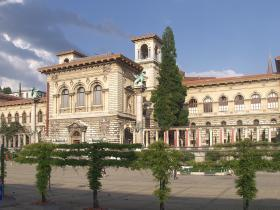
Palais de Rumine
Florentine Renaissance style building in Switzerland, home to the world's largest taxidermy Great White SharkThis lavish building, situated in the equally beautiful city of Lausanne, owes its construction and namesake to Gabriel de Rumine, the son of Russian nobility. Upon his death bed Gabriel bequeathed to the city of Lausanne 1.5 million Swiss Francs to erect a building for the use and enjoyment of the public.
Construction of the Palais de Rumine didn't take place until 1892, and owed its design to the Lyonnais architect Gaspard André. The building was inaugurated on November 3rd, 1902, although construction still continued up until 1904. During those days, it housed the library of the University of Lausanne, as well as scientific and artistic collections belonging to the Canton of Vaud.
During the 1980s, however, the university moved to its current location by Lake Geneva due to lack of space, and the Palais de Rumine was restructured. Today the Palais de Rumine hosts one of the four sites of the Cantonal and University Library of Lausanne, and also contains not one, but five different museums as well.
There is the Cantonal Museum of Fine Art, the Museum of Archaeology and History, the Numismatic Museum, the Geological Museum, and the Zoological Museum. Of particular note, the Zoological Museum is home to the largest stuffed great white shark in the world, sizing in at almost 6m.
Read more about Palais de Rumine on Atlas Obscura...
Category: Museums and Collections, Natural History, Unique Collections, Architectural Oddities, Repositories of Knowledge
Location: Lausanne, Switzerland
Edited by: TrevorShawnElia, Rachel, Dylan
Mon, 12 Mar 2012 22:12:00 -0500
Wilson's Stone Igloo
Wilson's Stone Igloo
Wilson's Stone IglooA tattered but preserved stone shelter and its remnants sits as a reminder of "The Worst Journey in the World"Wilson's Stone Igloo is on Igloo Spur, a small spur 160 m. up the general ridge extending southeast from Bomb Peak, east of Ross Island, Antarctica. Named and mapped by New Zealand Geological Survey Antarctic Expedition (NZGSAE), 1958–59, because it was on this feature that Dr. Edward A. Wilson and his party built a stone shelter during Robert Falcon Scott's British Antarctic Expedition, 1910-13 - Scott and Wilson's last.
Ed Wilson, Birdie Bowers, and Apsley Cherry-Garrard set out from Cape Evans in the middle of the Antarctic winter on foot and sledge, a 70 mile journey. They endured extreme cold, frost-bite, starvation, and near-death so they could be the first to collect emperor penguin eggs from the colony at Cape Crozier. The party ran into foul weather, lost a tent, and built a makeshift shelter out of rocks where they lay face down for three days waiting for the weather to clear. Their incredible journey is chronicled in Cherry-Garrard's "The Worst Journey in the World."
The "igloo" now looks like a ring of rocks filled with the tatters of the nearly failed expedition: penguin parts, shreds of canvas, wind-worn wool clothing, a test tube, rope, and rusted tin cans, all perfectly preserved by the Antarctic cold. It is Classified as a Category 1 heritage site (historic monument no. 21) by the Antarctic Heritage Trust.Read more about Wilson's Stone Igloo on Atlas Obscura...Category: Incredible Ruins, Dead ExplorersLocation: Edited by: vtoniolo, Rachel
Wilson's Stone Igloo
A tattered but preserved stone shelter and its remnants sits as a reminder of "The Worst Journey in the World"Wilson's Stone Igloo is on Igloo Spur, a small spur 160 m. up the general ridge extending southeast from Bomb Peak, east of Ross Island, Antarctica. Named and mapped by New Zealand Geological Survey Antarctic Expedition (NZGSAE), 1958–59, because it was on this feature that Dr. Edward A. Wilson and his party built a stone shelter during Robert Falcon Scott's British Antarctic Expedition, 1910-13 - Scott and Wilson's last.
Ed Wilson, Birdie Bowers, and Apsley Cherry-Garrard set out from Cape Evans in the middle of the Antarctic winter on foot and sledge, a 70 mile journey. They endured extreme cold, frost-bite, starvation, and near-death so they could be the first to collect emperor penguin eggs from the colony at Cape Crozier. The party ran into foul weather, lost a tent, and built a makeshift shelter out of rocks where they lay face down for three days waiting for the weather to clear. Their incredible journey is chronicled in Cherry-Garrard's "The Worst Journey in the World."
The "igloo" now looks like a ring of rocks filled with the tatters of the nearly failed expedition: penguin parts, shreds of canvas, wind-worn wool clothing, a test tube, rope, and rusted tin cans, all perfectly preserved by the Antarctic cold. It is Classified as a Category 1 heritage site (historic monument no. 21) by the Antarctic Heritage Trust.
Read more about Wilson's Stone Igloo on Atlas Obscura...
Category: Incredible Ruins, Dead Explorers
Location:
Edited by: vtoniolo, Rachel
Mon, 12 Mar 2012 10:42:00 -0500
The Archer Stone
The Archer Stone
The Archer StonePrehistoric sandstone menhir with Early Bronze Age cup and ring markings, also known as Robin Hood's StoneIn the heart of suburbia, enclosed by green painted iron railings, lies an ancient sandstone menhir. A weathered bronze plaque within the railings explains the stone’s recent history:
“THIS MONOLITH KNOWN AS "ROBIN HOODS STONE" STOOD IN A FIELD NAMED THE STONE HEY AT A SPOT 198 FEET DISTANT, AND IN A DIRECTION BEARING 7 DEGREES EAST OF TRUE NORTH FROM ITS PRESENT POSITION, TO WHICH IT WAS MOVED IN AUGUST 1928.”
Robin Hood’s Stone seems a rather misleading name since there are no tales of the fabled outlaw and his merry band straying quite so far from Sherwood as Merseyside. The monolith was formerly known as “The Archer’s Stone” on account of a series of deep grooves worn into it, once believed to have been used during medieval times for sharpening arrowheads.
As fanciful as this idea might seem, it is perhaps worth mentioning that during the 19th century the common consensus amongst antiquarians was that these grooves were created by Druids to aid the draining of blood from their sacrificial victims. It wasn't.
The grooves are now generally considered to have occurred naturally when the rock was formed and been further ingrained as the fragile sandstone was worn away by aeons of wind and rain. Archerfield Road is so named because it was built upon the site of the field where The Archer’s Stone once stood – the construction of that neighbourhood being the reason for the stone’s relocation in the 1920s.
Although the supposed arrow sharpening/bloodletting grooves are now considered to be natural, there are other, more intriguing, markings on Robin Hood’s Stone which are currently buried beneath a thick layer of concrete. A 1910 photograph of the now hidden end of the menhir clearly shows cup and ring markings thought to date from the Early Bronze Age, very similar to some of the markings on the nearby Calderstones in Calderstones Park.
The photograph was taken by R. Stuart-Brown and published, along with at least one other of Robin Hood’s Stone, in his 1911 work A History of the Manor and Township of Allerton in the County of Lancashire, Liverpool. This other photograph shows the stone standing in its field with roughly the same portion of its surface underground as today – the cup and rings still very much hidden from view. Only when the earth was dug out around the base of the menhir were the ancient carvings made visible.Read more about The Archer Stone on Atlas Obscura...Category: Geological Oddities, Unusual MonumentsLocation: Liverpool, United KingdomEdited by: johnreppion, Rachel, Dylan
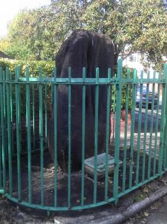
The Archer Stone
Prehistoric sandstone menhir with Early Bronze Age cup and ring markings, also known as Robin Hood's StoneIn the heart of suburbia, enclosed by green painted iron railings, lies an ancient sandstone menhir. A weathered bronze plaque within the railings explains the stone’s recent history:
“THIS MONOLITH KNOWN AS "ROBIN HOODS STONE" STOOD IN A FIELD NAMED THE STONE HEY AT A SPOT 198 FEET DISTANT, AND IN A DIRECTION BEARING 7 DEGREES EAST OF TRUE NORTH FROM ITS PRESENT POSITION, TO WHICH IT WAS MOVED IN AUGUST 1928.”
Robin Hood’s Stone seems a rather misleading name since there are no tales of the fabled outlaw and his merry band straying quite so far from Sherwood as Merseyside. The monolith was formerly known as “The Archer’s Stone” on account of a series of deep grooves worn into it, once believed to have been used during medieval times for sharpening arrowheads.
As fanciful as this idea might seem, it is perhaps worth mentioning that during the 19th century the common consensus amongst antiquarians was that these grooves were created by Druids to aid the draining of blood from their sacrificial victims. It wasn't.
The grooves are now generally considered to have occurred naturally when the rock was formed and been further ingrained as the fragile sandstone was worn away by aeons of wind and rain. Archerfield Road is so named because it was built upon the site of the field where The Archer’s Stone once stood – the construction of that neighbourhood being the reason for the stone’s relocation in the 1920s.
Although the supposed arrow sharpening/bloodletting grooves are now considered to be natural, there are other, more intriguing, markings on Robin Hood’s Stone which are currently buried beneath a thick layer of concrete. A 1910 photograph of the now hidden end of the menhir clearly shows cup and ring markings thought to date from the Early Bronze Age, very similar to some of the markings on the nearby Calderstones in Calderstones Park.
The photograph was taken by R. Stuart-Brown and published, along with at least one other of Robin Hood’s Stone, in his 1911 work A History of the Manor and Township of Allerton in the County of Lancashire, Liverpool. This other photograph shows the stone standing in its field with roughly the same portion of its surface underground as today – the cup and rings still very much hidden from view. Only when the earth was dug out around the base of the menhir were the ancient carvings made visible.
Read more about The Archer Stone on Atlas Obscura...
Category: Geological Oddities, Unusual Monuments
Location: Liverpool, United Kingdom
Edited by: johnreppion, Rachel, Dylan
Sun, 11 Mar 2012 22:30:00 -0500
Tor House and Hawk Tower
Tor House and Hawk Tower
Tor House and Hawk TowerOne poet's handmade, anachronistic home.Nestled between the golf courses and swanky homes of Carmel, California is a home that is both striking and strikingly out of place: a stone house reminiscent of an English Tudor cottage, with a two-story stone tower, almost cartoon-like because of the giant stones, standing alone in the center of the garden.
This house and tower were built by a poet named Robinson Jeffers in the 1920's. He chose the rugged, wind-battered but beautiful coastal land to settle with his wife Una and their two sons. Robinson decided to be the apprentice to the contractor of the house so that he could build the tower by himself. He collected the stones from the beach below his house. The end result was passionate, irregular, and rather heroic.
Robinson Jeffers' wrote mostly about nature. Carmel-by-the-Sea, sparsely inhabited at that time- and next to the wild, untamed mountains of Big Sur was the homestead he needed for continued inspiration.
It was in the house that Jeffers wrote much of his poetry, including a famous poem called Tor House, an ode to "the wild sea-fragrance of wind," "sea-worn granite," and "evenings strung in the throat of the valley like a lamp-lighted bridge." Jeffers left his legacy in words and stones, writing that his ghost is nestled between the granite rocks of Tor house: "my ghost you needn’t look for; it is probably Here, but a dark one, deep in the granite."
Take a tour of Tor house and join the ranks of the like of those who have visited before you: Sinclair Lewis, Edna St. Vincent Millay, Langston Hughes, Charles Lindbergh, George Gershwin and Charlie Chaplin.Read more about Tor House and Hawk Tower on Atlas Obscura...Category: Architectural Oddities, Eccentric Homes, Outsider ArchitectureLocation: Edited by: rebeccaclara, Rachel

Tor House and Hawk Tower
One poet's handmade, anachronistic home.Nestled between the golf courses and swanky homes of Carmel, California is a home that is both striking and strikingly out of place: a stone house reminiscent of an English Tudor cottage, with a two-story stone tower, almost cartoon-like because of the giant stones, standing alone in the center of the garden.
This house and tower were built by a poet named Robinson Jeffers in the 1920's. He chose the rugged, wind-battered but beautiful coastal land to settle with his wife Una and their two sons. Robinson decided to be the apprentice to the contractor of the house so that he could build the tower by himself. He collected the stones from the beach below his house. The end result was passionate, irregular, and rather heroic.
Robinson Jeffers' wrote mostly about nature. Carmel-by-the-Sea, sparsely inhabited at that time- and next to the wild, untamed mountains of Big Sur was the homestead he needed for continued inspiration.
It was in the house that Jeffers wrote much of his poetry, including a famous poem called Tor House, an ode to "the wild sea-fragrance of wind," "sea-worn granite," and "evenings strung in the throat of the valley like a lamp-lighted bridge." Jeffers left his legacy in words and stones, writing that his ghost is nestled between the granite rocks of Tor house: "my ghost you needn’t look for; it is probably Here, but a dark one, deep in the granite."
Take a tour of Tor house and join the ranks of the like of those who have visited before you: Sinclair Lewis, Edna St. Vincent Millay, Langston Hughes, Charles Lindbergh, George Gershwin and Charlie Chaplin.
Read more about Tor House and Hawk Tower on Atlas Obscura...
Category: Architectural Oddities, Eccentric Homes, Outsider Architecture
Location:
Edited by: rebeccaclara, Rachel
Sun, 11 Mar 2012 22:10:00 -0500
The Ancient Chapel of Toxteth
The Ancient Chapel of Toxteth
The Ancient Chapel of Toxteth 17th century puritan church with connections to the Salem Witch TrialsIn 1618 the local Puritan community erected the Toxteth Unitarian Chapel on the corner of today’s Park Road and Dingle Lane. Since the 1830s it has been known as The Ancient Chapel of Toxteth.
The chapel’s first minister was a man by the name of Richard Mather who eventually emigrated to Boston, Massachusetts in North America. Mather’s son Increase Mather and grandson Cotton Mather later became known for their involvement in the infamous Salem Witch Trials of the 1690s.
Prior to becoming a minister, Richard Mather was a school master and one of his pupils was Toxteth born astronomer and poet Jeremiah Horrox (sometimes spelt Horrocks). Jeremiah went on to predict, and to be one of only two people to observe, the transit of Venus across the sun’s surface on the 24th of November 1639. Horrox’s body was laid to rest in the chapel in 1641; he died in his native Toxteth having returned to the area only one year previously. A plaque dedicated to his memory hangs on the chapel wall, each of its four corners decorated with a five pointed star.
Local legend has it that Oliver Cromwell’s troops camped in the Chapel's graveyard when they came to Liverpool during the Civil War.Read more about The Ancient Chapel of Toxteth on Atlas Obscura...Category: Architectural Oddities, Curious Places of WorshipLocation: Liverpool, United KingdomEdited by: johnreppion, Dylan, Rachel
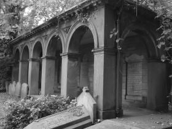
The Ancient Chapel of Toxteth
17th century puritan church with connections to the Salem Witch TrialsIn 1618 the local Puritan community erected the Toxteth Unitarian Chapel on the corner of today’s Park Road and Dingle Lane. Since the 1830s it has been known as The Ancient Chapel of Toxteth.
The chapel’s first minister was a man by the name of Richard Mather who eventually emigrated to Boston, Massachusetts in North America. Mather’s son Increase Mather and grandson Cotton Mather later became known for their involvement in the infamous Salem Witch Trials of the 1690s.
Prior to becoming a minister, Richard Mather was a school master and one of his pupils was Toxteth born astronomer and poet Jeremiah Horrox (sometimes spelt Horrocks). Jeremiah went on to predict, and to be one of only two people to observe, the transit of Venus across the sun’s surface on the 24th of November 1639. Horrox’s body was laid to rest in the chapel in 1641; he died in his native Toxteth having returned to the area only one year previously. A plaque dedicated to his memory hangs on the chapel wall, each of its four corners decorated with a five pointed star.
Local legend has it that Oliver Cromwell’s troops camped in the Chapel's graveyard when they came to Liverpool during the Civil War.
Read more about The Ancient Chapel of Toxteth on Atlas Obscura...
Category: Architectural Oddities, Curious Places of Worship
Location: Liverpool, United Kingdom
Edited by: johnreppion, Dylan, Rachel
Thu, 08 Mar 2012 23:52:00 -0600
Humongous Fungus Fest
Humongous Fungus Fest
Humongous Fungus FestCovering 37 subterranean acres, this Armillaria gallic is a famous fungus with its own festivalWhile it may no longer be thought of as the largest and oldest living organism in the world, the people of Crystal Falls refuse to acknowledge the other candidates and continue to celebrate their very own Humongous Fungus, a Armillaria gallica fungus colony that stretches across 37 acres, weighs in at 21,000 lbs., and is around 1,500 years old.
The title of largest living organism is a questionable one, and one that really depends on who you ask. Humongous was beat out by an Oregonian Armillaria solidipes fungus measuring in at 2,200 acres, but it's disputed because although the colony is all of the same genetic makeup, it's not actually connected, comprised of many smaller individual groups growing close together.
Despite the controversy, the residents of Crystal Falls refuse to be deterred from throwing a “bang-pow!” of a festival in honor of the benevolent mushroom. Every August, locals and tourists alike commemorate the achievement of the invasive, wood-decaying fungus by turning the picturesque town into a fabulous event.
For three days, revelers will enjoy a Pancake Breakfast, Volleyball and Golf Tournament, Horseshoe Tournament, softball games and a Tube Float down the river. Other major attractions include the Fungus Fest Parade, fireworks displays, and if there's room for it after all of the pie eating contests and ice cream socials, it's time for the major event – the preparation and eating of the Humongous Pizza.
The Humongous Pizza is, according to the confident residents of Crystal Falls, the largest mushroom pizza in the world at 10 ft. by 10 ft., not to be confused with the actual largest pizza in the world made in South Africa in 1990, which weighed in at 26,883 lbs. While perhaps a little exaggerated in grandiosity, at least it is made with mushrooms from the gargantuan guest of honor.
While the festival sounds like a pretty good time, the fungus itself isn't much to look at, since the majority of it is underground. Visitors expecting to see a giant mushroom as far as the eye can see will be disappointed with the small, protruding heads of what are commonly known as “button mushrooms” poking out from the forest floor for a short time in the fall. It may just be best to stay in town and enjoy the party.Read more about Humongous Fungus Fest on Atlas Obscura...Category: Extraordinary Flora, Wondrous Performances, Subterranean SitesLocation: Edited by: Rachel
Humongous Fungus Fest
Covering 37 subterranean acres, this Armillaria gallic is a famous fungus with its own festivalWhile it may no longer be thought of as the largest and oldest living organism in the world, the people of Crystal Falls refuse to acknowledge the other candidates and continue to celebrate their very own Humongous Fungus, a Armillaria gallica fungus colony that stretches across 37 acres, weighs in at 21,000 lbs., and is around 1,500 years old.
The title of largest living organism is a questionable one, and one that really depends on who you ask. Humongous was beat out by an Oregonian Armillaria solidipes fungus measuring in at 2,200 acres, but it's disputed because although the colony is all of the same genetic makeup, it's not actually connected, comprised of many smaller individual groups growing close together.
Despite the controversy, the residents of Crystal Falls refuse to be deterred from throwing a “bang-pow!” of a festival in honor of the benevolent mushroom. Every August, locals and tourists alike commemorate the achievement of the invasive, wood-decaying fungus by turning the picturesque town into a fabulous event.
For three days, revelers will enjoy a Pancake Breakfast, Volleyball and Golf Tournament, Horseshoe Tournament, softball games and a Tube Float down the river. Other major attractions include the Fungus Fest Parade, fireworks displays, and if there's room for it after all of the pie eating contests and ice cream socials, it's time for the major event – the preparation and eating of the Humongous Pizza.
The Humongous Pizza is, according to the confident residents of Crystal Falls, the largest mushroom pizza in the world at 10 ft. by 10 ft., not to be confused with the actual largest pizza in the world made in South Africa in 1990, which weighed in at 26,883 lbs. While perhaps a little exaggerated in grandiosity, at least it is made with mushrooms from the gargantuan guest of honor.
While the festival sounds like a pretty good time, the fungus itself isn't much to look at, since the majority of it is underground. Visitors expecting to see a giant mushroom as far as the eye can see will be disappointed with the small, protruding heads of what are commonly known as “button mushrooms” poking out from the forest floor for a short time in the fall. It may just be best to stay in town and enjoy the party.
Read more about Humongous Fungus Fest on Atlas Obscura...
Category: Extraordinary Flora, Wondrous Performances, Subterranean Sites
Location:
Edited by: Rachel
Thu, 08 Mar 2012 10:30:00 -0600
Scottish Rite Temple
Scottish Rite Temple
Scottish Rite TempleOne of the largest Masonic temples in the world, created at the height of the oil boom in ostentatious styleWith ornate rooms designed to meticulously replicate historic periods and decorations riddled with arcane symbols, the Scottish Rite Temple in Guthrie, Oklahoma, is one of the largest Masonic complexes in the world. Completed in 1923 for around $3 million, it is a both a monument to the oil boom and the influence of the Masons in the state.
Its history goes back to 1889, when the cornerstone for the first Masonic structure in Guthrie was placed. After achieving statehood in 1907, Oklahoma first had its capital in Guthrie before it was relocated to Oklahoma City, and the original legislative hall was later acquired by the Masons for their new temple. Although the original Convention Hall is now connected to the 1923 complex, it is still preserved in much the same condition as when it was finished in 1908.
Marking the end of Oklahoma Avenue, which juts off from the elegant Victorian architecture of downtown Guthrie, the temple is an elaborate Neo-classical building made from Indiana limestone lined with Doric columns. 400 stained glass windows are incorporated into the building designed by the Oklahoma City architectural firm Hawk and Parr. The interior was overseen by Marion and Kathryn Davis, who also worked on the interior of Rockefeller Center in New York, and includes a 190 foot long, 52 foot wide marble two-story atrium as a tribute to the Roman Empire.
The theater, also in the Roman style, has a 3,500 seating capacity and a Kimball organ with 5,376 pipes concealed in an arch over the stage. A Pompeiian Room has replicas of furniture found in the city consumed by ash, and the Assyrian Room has chandeliers designed to replicate the fire pots used by the Assyrians around 700 BC. 18th century English design is duplicated in the Crystal Room, named for its Czech crystal chandeliers, containing a rug weighing 1,000 pounds, which arrived by train, like most of ornamentations, from the East Coast. The Writing Room was done in the 17th cenury English style, with extra long chairs for the tall frontiersmen, and the library holding Masonic texts is in a Gothic style, although with an Oklahoma touch in the carved cowboys and Indians stalking each other along the tops of the walls. The Egyptian Room, a 300-seat theater, was painted in pigments mixed with egg whites, just as ancient Egyptians did with their temples.
The Scottish Rite Temple is preserved in almost its original condition from when it was completed in the 1920s, and tours are offered of its detailed interior by Masons, who continue to use the temple as a center for Masonic activity in Oklahoma.Read more about Scottish Rite Temple on Atlas Obscura...Category: Architectural OdditiesLocation: Edited by: allison
Scottish Rite Temple
One of the largest Masonic temples in the world, created at the height of the oil boom in ostentatious styleWith ornate rooms designed to meticulously replicate historic periods and decorations riddled with arcane symbols, the Scottish Rite Temple in Guthrie, Oklahoma, is one of the largest Masonic complexes in the world. Completed in 1923 for around $3 million, it is a both a monument to the oil boom and the influence of the Masons in the state.
Its history goes back to 1889, when the cornerstone for the first Masonic structure in Guthrie was placed. After achieving statehood in 1907, Oklahoma first had its capital in Guthrie before it was relocated to Oklahoma City, and the original legislative hall was later acquired by the Masons for their new temple. Although the original Convention Hall is now connected to the 1923 complex, it is still preserved in much the same condition as when it was finished in 1908.
Marking the end of Oklahoma Avenue, which juts off from the elegant Victorian architecture of downtown Guthrie, the temple is an elaborate Neo-classical building made from Indiana limestone lined with Doric columns. 400 stained glass windows are incorporated into the building designed by the Oklahoma City architectural firm Hawk and Parr. The interior was overseen by Marion and Kathryn Davis, who also worked on the interior of Rockefeller Center in New York, and includes a 190 foot long, 52 foot wide marble two-story atrium as a tribute to the Roman Empire.
The theater, also in the Roman style, has a 3,500 seating capacity and a Kimball organ with 5,376 pipes concealed in an arch over the stage. A Pompeiian Room has replicas of furniture found in the city consumed by ash, and the Assyrian Room has chandeliers designed to replicate the fire pots used by the Assyrians around 700 BC. 18th century English design is duplicated in the Crystal Room, named for its Czech crystal chandeliers, containing a rug weighing 1,000 pounds, which arrived by train, like most of ornamentations, from the East Coast. The Writing Room was done in the 17th cenury English style, with extra long chairs for the tall frontiersmen, and the library holding Masonic texts is in a Gothic style, although with an Oklahoma touch in the carved cowboys and Indians stalking each other along the tops of the walls. The Egyptian Room, a 300-seat theater, was painted in pigments mixed with egg whites, just as ancient Egyptians did with their temples.
The Scottish Rite Temple is preserved in almost its original condition from when it was completed in the 1920s, and tours are offered of its detailed interior by Masons, who continue to use the temple as a center for Masonic activity in Oklahoma.
Read more about Scottish Rite Temple on Atlas Obscura...
Category: Architectural Oddities
Location:
Edited by: allison
Wed, 07 Mar 2012 23:00:00 -0600
The Evergreens Cemetery
The Evergreens Cemetery
The Evergreens CemeteryFinal resting place for the Triangle Shirtwaist fire’s unidentified victimsOpened in 1849, The Evergreens Cemetery is a nonsectarian graveyard that runs along the Brooklyn/Queens border. It houses everyone from Civil War soldiers to an assortment of vaudevillians to Jonathan Reed (the man who lived in his wife’s mausoleum).
It also holds the unidentified remains of the Triangle Shirtwaist fire’s victims, buried under a monument of a grieving woman. According to the cemetery’s records from April 5, 1911, there were eight graves: one man, six women, and one casket holding people whose gender could not be identified.
On March 25, 1911, a fire broke out in a Greenwich Village sweatshop called the Triangle Waist Company. Because the owners kept the exits locked, the workers were trapped, resulting in an estimated 146 deaths, 50 of which resulted from workers jumping out of windows.
The unidentified bodies were honored with a funeral procession that was attended by 400,000 mourners. Soon after, one of the women’s bodies was claimed by her family and moved to Calvary Cemetery.
One hundred years later, a researcher named Michael Hirsch came up with the possible names of the other six victims. Even though their remains were not tested for DNA, their names were included in a list of the dead that was read at the centennial.Read more about The Evergreens Cemetery on Atlas Obscura...Category: Memento Mori, Catacombs, Crypts, & CemeteriesLocation: Edited by: HJHausman, Rachel
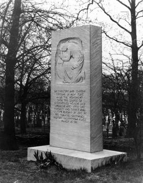
The Evergreens Cemetery
Final resting place for the Triangle Shirtwaist fire’s unidentified victimsOpened in 1849, The Evergreens Cemetery is a nonsectarian graveyard that runs along the Brooklyn/Queens border. It houses everyone from Civil War soldiers to an assortment of vaudevillians to Jonathan Reed (the man who lived in his wife’s mausoleum).
It also holds the unidentified remains of the Triangle Shirtwaist fire’s victims, buried under a monument of a grieving woman. According to the cemetery’s records from April 5, 1911, there were eight graves: one man, six women, and one casket holding people whose gender could not be identified.
On March 25, 1911, a fire broke out in a Greenwich Village sweatshop called the Triangle Waist Company. Because the owners kept the exits locked, the workers were trapped, resulting in an estimated 146 deaths, 50 of which resulted from workers jumping out of windows.
The unidentified bodies were honored with a funeral procession that was attended by 400,000 mourners. Soon after, one of the women’s bodies was claimed by her family and moved to Calvary Cemetery.
One hundred years later, a researcher named Michael Hirsch came up with the possible names of the other six victims. Even though their remains were not tested for DNA, their names were included in a list of the dead that was read at the centennial.
Read more about The Evergreens Cemetery on Atlas Obscura...
Category: Memento Mori, Catacombs, Crypts, & Cemeteries
Location:
Edited by: HJHausman, Rachel
Tue, 06 Mar 2012 20:49:00 -0600
Arizona Cactus Garden
Arizona Cactus Garden
Arizona Cactus GardenA hidden world of exotic succulents and cactiAlthough this garden is officially called Arizona Garden, it is located in a remote enclave of Stanford University campus in California. The garden houses over 500 species of succulents and cacti from all over the globe and is divided according to region. Visitors can take a quick trip around the world through the world of cacti!
The garden was built between 1881 and 1883 for Leland and Jane Stanford on a site next to their proposed home. The neat, manicured style was considered old-fashioned in comparison to the more moden wild, naturalistic garden approach gaining popularity in the 1880s. However, the Stanfords' only son died of typhoid fever in 1884, and the nearby home was never built (neither was the proposed manmade lake). The garden fell into shambles after WWII and it wasn't restored until the late 1990s.
When the garden debuted, it was a favored place for students to take dates, evidenced by the lyrics to an old Stanford song: "Down by the cactus so silent and still/ the Junior has come to the question at last/ And love him? The maiden has promised she will." There is no evidence that the suggestive shapes of many of the cacti had anything to do with it.
Today, the cactus garden remains off the beaten path for Stanford tourists and students alike. But behind the dusty, overgrown path you'll still find the remains of a once-glorious Victorian display of exotic succulents and cacti.Read more about Arizona Cactus Garden on Atlas Obscura...Category: Extraordinary Flora, Horticultural MarvelsLocation: Edited by: rebeccaclara, Rachel
Arizona Cactus Garden
A hidden world of exotic succulents and cactiAlthough this garden is officially called Arizona Garden, it is located in a remote enclave of Stanford University campus in California. The garden houses over 500 species of succulents and cacti from all over the globe and is divided according to region. Visitors can take a quick trip around the world through the world of cacti!
The garden was built between 1881 and 1883 for Leland and Jane Stanford on a site next to their proposed home. The neat, manicured style was considered old-fashioned in comparison to the more moden wild, naturalistic garden approach gaining popularity in the 1880s. However, the Stanfords' only son died of typhoid fever in 1884, and the nearby home was never built (neither was the proposed manmade lake). The garden fell into shambles after WWII and it wasn't restored until the late 1990s.
When the garden debuted, it was a favored place for students to take dates, evidenced by the lyrics to an old Stanford song: "Down by the cactus so silent and still/ the Junior has come to the question at last/ And love him? The maiden has promised she will." There is no evidence that the suggestive shapes of many of the cacti had anything to do with it.
Today, the cactus garden remains off the beaten path for Stanford tourists and students alike. But behind the dusty, overgrown path you'll still find the remains of a once-glorious Victorian display of exotic succulents and cacti.
Read more about Arizona Cactus Garden on Atlas Obscura...
Category: Extraordinary Flora, Horticultural Marvels
Location:
Edited by: rebeccaclara, Rachel
Tue, 06 Mar 2012 08:31:00 -0600
Postman's Park
Postman's Park
Postman's ParkA quiet memorial to 'Heroic Self Sacrifice' in the heart of the City of LondonThis small and quiet park has a hidden gem, a wall of memorial plaques opened in 1900, commemorating the bravery of ordinary people, policemen and firemen who gave their own lives to save another.
The plaques are exquisitely executed with ornate typeface and Royal Doulton china designed by leading tile designer William De Morgan. They are a pleasure to behold in this small green space in such a built up area, even before you begin to unravel the story behind them.
The tales they illustrate bring to life a world devoid of warning signs and health and safety regulations, along with a sense of community spirit and two fingers up to the indifference that can sometimes be found in the modern world today.
Some examples of the plaques:
'Soloman Galaman Aged 11, Died saving his little brother from being run over in Commerical Street in Sept 1901'
'Alice Ayres, Daughter of a bricklayer's labourer, who by intrepid conduct saved 3 children from a burning house...at the cost of her own young life, April 1885'
'William Goodrum Aged 60, Signalman. Lost his life at Kingsland Rd Bridge in saving a workman from death under the approaching train form Kew'
A great place to stop and hide from the bustle of the City and contemplate some of the finer qualities of homo sapiens.Read more about Postman's Park on Atlas Obscura...Category: Unusual Monuments, Memento MoriLocation: London, United KingdomEdited by: gemb, Rachel
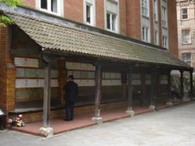
Postman's Park
A quiet memorial to 'Heroic Self Sacrifice' in the heart of the City of LondonThis small and quiet park has a hidden gem, a wall of memorial plaques opened in 1900, commemorating the bravery of ordinary people, policemen and firemen who gave their own lives to save another.
The plaques are exquisitely executed with ornate typeface and Royal Doulton china designed by leading tile designer William De Morgan. They are a pleasure to behold in this small green space in such a built up area, even before you begin to unravel the story behind them.
The tales they illustrate bring to life a world devoid of warning signs and health and safety regulations, along with a sense of community spirit and two fingers up to the indifference that can sometimes be found in the modern world today.
Some examples of the plaques:
'Soloman Galaman Aged 11, Died saving his little brother from being run over in Commerical Street in Sept 1901'
'Alice Ayres, Daughter of a bricklayer's labourer, who by intrepid conduct saved 3 children from a burning house...at the cost of her own young life, April 1885'
'William Goodrum Aged 60, Signalman. Lost his life at Kingsland Rd Bridge in saving a workman from death under the approaching train form Kew'
A great place to stop and hide from the bustle of the City and contemplate some of the finer qualities of homo sapiens.
Read more about Postman's Park on Atlas Obscura...
Category: Unusual Monuments, Memento Mori
Location: London, United Kingdom
Edited by: gemb, Rachel
Mon, 05 Mar 2012 22:15:00 -0600
Peter Mitterhofer Typewriter Museum
Peter Mitterhofer Typewriter Museum
Peter Mitterhofer Typewriter MuseumTypewriter museum housing more than 1,500 machines preserves the history of the grandfather of computers.Open since 1998, this purpose-built museum in Italy’s Bolzano region holds over 1,500 typewriter models in its permanent collection. The museum was built in honour of Peter Mitterhofer, one of the machine’s many accredited inventors, with the help of typewriter collector Kurt Ryba’s donation “for all times and as an inalienable cultural heritage.”
Spanning 4 floors, the museum displays its most polished examples as part of a vast chronology of key-punching and space bar slapping, complete with theatrical re-stagings for those unable to imagine how things were typed before repetitive strain injury was conceived.
A brief history of the world told through one appliance, highlights include the Malling Hansen, the famous ‘writing ball’ device that looks as if it were developed by Enlightenment physicians, and the world famous German Enigma encryption machines, the deciphering of which were, for some, instrumental in the Allied war effort. Occasional tables are set for viewers to have a go themselves, and punch a few lines into their tickets to take home as a memento.
Mitterhofer was, as might be expected, an eccentric character, who “often argued with priests and policemen”. The first objects that he constructed range from a washing machine, a guitar, an instrument called the Hölzerne Glachter, which produces a laughing sound, to more mundane loudspeakers and picture frames. His first typewriter, produced in 1864 was deemed by Mitterhofer to be a ‘failure’, though in fact, of all the early machines, the shape and key format of his prototype most closely resembles the mass-produced models that prevailed.
A show of interest to the museum’s staff could lead to a visit to the basement or “special showroom”, clad with wall-to-wall shelves that are stacked with the machines that the museum couldn’t quite squeeze in to its displays. Not for the faint-wristed, this archive contains all of the models that evade the typewriter canons: from black glossy proto-surrealist elegance to bright Disney playthings, along with all of the bakelite and melamine - Casio Elite, Smith Corona Deluxe, the IBM Selectric, and many, many more - that took their glimpses in the limelight inbetween.Read more about Peter Mitterhofer Typewriter Museum on Atlas Obscura...Category: Unique Collections, Instruments of Science, Electrical Oddities, Amazing AutomataLocation: Parcines, ItalyEdited by: trowel, Rachel
Peter Mitterhofer Typewriter Museum
Typewriter museum housing more than 1,500 machines preserves the history of the grandfather of computers.Open since 1998, this purpose-built museum in Italy’s Bolzano region holds over 1,500 typewriter models in its permanent collection. The museum was built in honour of Peter Mitterhofer, one of the machine’s many accredited inventors, with the help of typewriter collector Kurt Ryba’s donation “for all times and as an inalienable cultural heritage.”
Spanning 4 floors, the museum displays its most polished examples as part of a vast chronology of key-punching and space bar slapping, complete with theatrical re-stagings for those unable to imagine how things were typed before repetitive strain injury was conceived.
A brief history of the world told through one appliance, highlights include the Malling Hansen, the famous ‘writing ball’ device that looks as if it were developed by Enlightenment physicians, and the world famous German Enigma encryption machines, the deciphering of which were, for some, instrumental in the Allied war effort. Occasional tables are set for viewers to have a go themselves, and punch a few lines into their tickets to take home as a memento.
Mitterhofer was, as might be expected, an eccentric character, who “often argued with priests and policemen”. The first objects that he constructed range from a washing machine, a guitar, an instrument called the Hölzerne Glachter, which produces a laughing sound, to more mundane loudspeakers and picture frames. His first typewriter, produced in 1864 was deemed by Mitterhofer to be a ‘failure’, though in fact, of all the early machines, the shape and key format of his prototype most closely resembles the mass-produced models that prevailed.
A show of interest to the museum’s staff could lead to a visit to the basement or “special showroom”, clad with wall-to-wall shelves that are stacked with the machines that the museum couldn’t quite squeeze in to its displays. Not for the faint-wristed, this archive contains all of the models that evade the typewriter canons: from black glossy proto-surrealist elegance to bright Disney playthings, along with all of the bakelite and melamine - Casio Elite, Smith Corona Deluxe, the IBM Selectric, and many, many more - that took their glimpses in the limelight inbetween.
Read more about Peter Mitterhofer Typewriter Museum on Atlas Obscura...
Category: Unique Collections, Instruments of Science, Electrical Oddities, Amazing Automata
Location: Parcines, Italy
Edited by: trowel, Rachel
Mon, 05 Mar 2012 11:23:00 -0600
Green-Wood Cemetery's Brooklyn Theatre Fire Memorial
Green-Wood Cemetery's Brooklyn Theatre Fire Memorial
Green-Wood Cemetery's Brooklyn Theatre Fire MemorialMass grave for victims of one of the city’s worst firesOn December 5, 1876, a lantern on the stage of the Brooklyn Theatre would cause a horrific fire that would leave 278 dead. The building was considered to be up to safety standards, even though all of the victims were trapped in a single staircase, dying from smoke inhalation as they tried to flee the balcony.
One hundred and three bodies were unidentifiable or belonged to families who could not afford a proper burial. They were buried in a circular mass grave in Green-Wood Cemetery, marked in the center with a granite obelisk.
Coincidentally, one of the fire’s survivor’s, Kate Claxton, was buried in another area of the cemetery in 1924. She starred in The Two Orphans, the play that was going on that night. She only managed to escape by remembering that there was an underground tunnel that lead from a dressing room to the box office.Read more about Green-Wood Cemetery's Brooklyn Theatre Fire Memorial on Atlas Obscura...Category: Catacombs, Crypts, & CemeteriesLocation: Edited by: HJHausman, Annetta
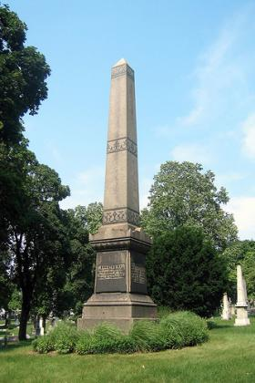
Green-Wood Cemetery's Brooklyn Theatre Fire Memorial
Mass grave for victims of one of the city’s worst firesOn December 5, 1876, a lantern on the stage of the Brooklyn Theatre would cause a horrific fire that would leave 278 dead. The building was considered to be up to safety standards, even though all of the victims were trapped in a single staircase, dying from smoke inhalation as they tried to flee the balcony.
One hundred and three bodies were unidentifiable or belonged to families who could not afford a proper burial. They were buried in a circular mass grave in Green-Wood Cemetery, marked in the center with a granite obelisk.
Coincidentally, one of the fire’s survivor’s, Kate Claxton, was buried in another area of the cemetery in 1924. She starred in The Two Orphans, the play that was going on that night. She only managed to escape by remembering that there was an underground tunnel that lead from a dressing room to the box office.
Read more about Green-Wood Cemetery's Brooklyn Theatre Fire Memorial on Atlas Obscura...
Category: Catacombs, Crypts, & Cemeteries
Location:
Edited by: HJHausman, Annetta
Sun, 04 Mar 2012 22:20:00 -0600
AquaDom at Radisson Blu Berlin
AquaDom at Radisson Blu Berlin
AquaDom at Radisson Blu BerlinThe largest free standing aquarium in the world resides in a hotel lobby in BerlinTouted as the largest cylindrical fish tank in the world - 25 meters high and 12 meters in diameter, the Aquadom is a sight to behold. It contains over 1 million litres of water, a coral reef, and is home to nearly 2,600 fish from 56 different species.
A tank of this caliber cannot be simply viewed from the ground, and with the ingenuity and decadence the Radisson Blu hotels are famous for, they've solved this problem in a grand way. An elevator takes guests up through the inside of the tank for a full 360 degree view of the fish as well as the divers that care for them and the tank on a daily basis.
The AquaDom was built by the Union Investment Real Estate GmbH at a cost of 13 million Euros for the aquarium alone. Biological management lies with the Berlin Society for Large Aquariums.
The AquaDom is maintained by the Sea Life Berlin, which is located right next to the hotel. Visitors to both the hotel and Sea Life Berlin can take a breathtaking ride in this one-of-a-kind sea life habitat.Read more about AquaDom at Radisson Blu Berlin on Atlas Obscura...Category: Fascinating Fauna, Odd Accommodations, Architectural OdditiesLocation: Berlin, GermanyEdited by: Burt, Rachel, Seth Teicher
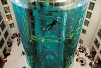
AquaDom at Radisson Blu Berlin
The largest free standing aquarium in the world resides in a hotel lobby in BerlinTouted as the largest cylindrical fish tank in the world - 25 meters high and 12 meters in diameter, the Aquadom is a sight to behold. It contains over 1 million litres of water, a coral reef, and is home to nearly 2,600 fish from 56 different species.
A tank of this caliber cannot be simply viewed from the ground, and with the ingenuity and decadence the Radisson Blu hotels are famous for, they've solved this problem in a grand way. An elevator takes guests up through the inside of the tank for a full 360 degree view of the fish as well as the divers that care for them and the tank on a daily basis.
The AquaDom was built by the Union Investment Real Estate GmbH at a cost of 13 million Euros for the aquarium alone. Biological management lies with the Berlin Society for Large Aquariums.
The AquaDom is maintained by the Sea Life Berlin, which is located right next to the hotel. Visitors to both the hotel and Sea Life Berlin can take a breathtaking ride in this one-of-a-kind sea life habitat.
Read more about AquaDom at Radisson Blu Berlin on Atlas Obscura...
Category: Fascinating Fauna, Odd Accommodations, Architectural Oddities
Location: Berlin, Germany
Edited by: Burt, Rachel, Seth Teicher